September 2025
DOI: 10.5281/zenodo.17188444. Version 1, September 20, 2025. Pre-print
v2.
Atomic spectra reveal hidden regularities when reorganized in a recursive geometry. Our method is non-circular: (1) we fix a recursion coordinate \(\gamma\) by defining an \(\alpha\)-powered ruler that is anchored to the Rydberg scale; (2) evaluate level spacings statistically for resonance with this ruler; and (3) overlay photons on their \(\gamma\)-resonant levels only afterwards. We find empirically that, when plotted by \((\gamma,\nu)\), photon frequencies decay as \(\nu \propto \alpha^{\gamma}\). In the \(\alpha\)-affine Thread Frame \((\gamma,\log_{10}\nu)\), these decays straighten into near-linear threads with universal tilt \(\beta = \log_{10}\alpha\). To evaluate the physics of our discovery, \(\gamma\)-resonant transitions are grouped by principal-quantum-number towers \((n_i,n_k)\), and tower partitioning is used to resolve intercepts \(\chi\) (carrying reduced mass, \(Z^{2}\), and site factors) and local deviations (microslopes).
Across \(\sim 30\) ions processed with one preregistered pipeline and bootstrap nulls, we find: (1) slopes cluster tightly near \(\log_{10}\alpha\); (2) intercepts enable isotope calibration and hydrogenic collapse; (3) a \(\sigma\)-sweep recovers \(\alpha\) only in fine-structure windows; (4) microslopes reveal torsion corridors and support ceilings; and (5) cross-thread interactions (CTI) are falsifiable by phase- and linewidth gates. We also introduce photoncodes—\(\chi\)-invariant binary sequences on a fixed \(\kappa\)-lattice—showing that recursive structure is recoverable from photons alone.
Finally, many ions exhibit terminal photons approaching a common geometric envelope, motivating the conjecture \[E = mc^{2} + h\nu_{\min},\] with \(h\nu_{\min}\) as a putative single-photon anchor. We present this as a falsifiable synthesis: a reproducible reorganization of spectra in which photons themselves reveal recursive geometry, independent of the \(\gamma\) construction.
Atomic spectra have shaped physics from the birth of quantum theory to modern precision tests. From Balmer’s optical series (Balmer 1885), Rydberg’s scaling formula (Rydberg 1890), and Moseley’s X-ray ordering of the periodic table (Moseley 1913) to Ritz’s combination principle (Ritz 1908) and quantum-defect theory (Condon and Shortley 1935), line patterns have repeatedly revealed how matter organizes energy and emits radiation. In parallel, the wave picture—from Maxwell’s electrodynamics (Maxwell 1865), through Sommerfeld’s relativistic refinements (Sommerfeld 1916), to modern QED (Feynman 1985)—has emphasized that oscillations are governed by geometry and scale.
Building on this lineage, we treat spectra not as disconnected line lists but as observables of a recursive geometry that couples energy, frequency, and scaling. This paper makes that geometry explicit and operational. Our pipeline is deliberately non-circular: recursion depth \(\gamma\) is discovered from levels only using the following \(\alpha\)-powered ruler \[\Delta E_{\mathrm{target}}(\gamma) = E_{0}Z^{2}\alpha^{\gamma},\] (with bootstrap nulls and registered tolerances), and then photons are introduced by re-association with the \(\gamma\)-resonant levels. The same gates and settings are used for every ion, with no per-species tuning. This sequencing matters: co-linearity, intercept transport, cross-thread interactions, floor tests, and photoncodes are therefore out-of-sample with respect to how \(\gamma\) was defined.
After a levels-only \(\gamma\) sweep, plotting photon frequencies against \(\gamma\) reveals a robust, near-linear decay in \((\gamma,\log_{10}\nu)\) with a common tilt \(\beta \approx \log_{10}\alpha\). By contrast, simply counting photons per \(\gamma\) yields ion-specific histograms with no universal trend. This relationship, \(\nu \propto \alpha^{\gamma}\), becomes evident when an ion’s spectral lines are plotted on the \(\gamma\) ladder, a mapping made possible through our \(\gamma\)-resonant levels sweep. The pattern is not a frame artifact; it is an empirical property of photons once mapped onto \(\gamma\).
These observations are not guaranteed by the coordinate choice and are therefore the testable content. See the counts-vs-frequency quartet (Fig. 6) and the cross-ion pooled plot (Fig. 7) for supporting evidence from NIST data. Grouping photons by quantum numbers (“towers”) is not needed to reveal the universal slope, but is essential for resolving intercepts \(\chi\) (mass/\(Z^2\)/site transport), microslopes (local texture), and motif structures for photoncodes.
We structure the results around three core elements. (1) A recursion depth \(\gamma\), defined from level spacings alone (Eq. [eq:recursive_depth]). (2) An \(\alpha\)-anchored Thread Frame: plotting photons in \((\gamma,\log_{10}\nu)\) reveals near-linear bands with a universal tilt \(\beta = \log_{10}\alpha\). This universal tilt appears even when photons are pooled by ion (no towers). Tower grouping is then used to attribute per-tower intercepts \(\chi\) (which transport reduced mass, \(Z^{2}\), and site factors) and to quantify structured local deviations (microslopes). (3) A single Intercept Transport Law (L1): the intercept \(\chi\) carries the Einstein–Rydberg base together with reduced mass, \(Z^2\), and tower/site factors (Eq. [eq:intercept] and corollaries). The tilt \(\beta = \log_{10}\alpha\) is fixed by the \(\alpha\)-affine frame, but the co-linearity of photons is empirical (Eqs. [eq:thread_frame]–[eq:universal_slope]). In other words, the frame straightens the decay curve; what emerges is that photons grouped by towers share intercepts with small, structured residuals.
Additional tools extend the framework: local deviations (microslopes \(\delta\), phase \(\theta\)) act as diagnostics; a two-gate cross-thread interaction (CTI) protocol tests cross-ion overlaps; photoncodes discover structure from photons alone; and two frontier conjectures capture deeper implications—a finite Planck floor at large \(\gamma\), and a compact Einstein–Rydberg anchor \(E=mc^2+h\nu_{\min}\).
The goal of this introduction is to set the mindset: tilt is a frame property; co-linearity of photon frequency is an empirical result; identity resides in the intercept; and local texture plus photon-only encodings connect the geometry to practice. Contributions, terminology, and an equation index are summarized below. In the subsequent sections, Foundations state the key elements of the framework followed by the core equations. Methodology describes the non-circular pipeline in two stepwise phases. Applications illustrate how the framework operates in practice, demonstrating that the recursive geometry is both falsifiable and recoverable from photons alone.
Recursion Depth (\(\gamma\)). A levels-only coordinate defined by spacing ratios to \(\alpha\)-scaled hydrogenic targets (no photons). (Eq. [eq:recursive_depth])
Thread Frame (\(\alpha\)-Affine). In \((\gamma,\nu)\) photons already follow an exponential decay, which in \((\gamma,\log_{10}\nu)\) straightens into near-linear bands with universal tilt \(\beta=\log_{10}\alpha\). This universal tilt is visible even when photons are pooled by ion (no towers). Tower partitioning is introduced only to resolve intercepts \(\chi\) and local deviations (microslopes). (Eq. [eq:thread_frame])
Intercept Transport Law. With slope fixed, intercepts \(\chi\) transport the Einstein–Rydberg base, reduced mass, and \(Z^2\) scaling, with tower/site factors \(F_{\text{site}}\). Corollaries: isotope shifts and hydrogenic collapse. (Eq. [eq:intercept]; Eqs. [eq:chi_isotope]–[eq:chi_norm])
Non-circular pipeline. Levels-only \(\gamma\) sweep \(\rightarrow\) optional tower grouping \(\rightarrow\) post-hoc photon overlay \(\rightarrow\) intercept/microslope analysis under reliability gates. (§3.1; Fig. 1)
Scaler Locking Test (\(\sigma\)-sweep). Holding \(\gamma\), we sweep scalers \(\sigma\) and show resonance significance concentrates only at \(\sigma=\alpha\) in fine-structure windows; control windows remain featureless. (§3.4; Table 3, Fig. 4–5)
Microslopes. Local deviations \(\delta(\gamma),\theta(\gamma)\) expose torsion corridors, emission zones, and hand-offs; they provide phase diagnostics for cross-ion comparison. (§5.2; Fig. 10)
Cross-Thread Interactions (CTI). Cross-thread intersections require coincidence in both projected frequency (linewidth gate, Eq. [eq:CTI_freq]) and local phase (\(\Delta\theta\) gate, Eq. [eq:CTI_phase]), giving falsifiable overlap predictions (§5.4; Figs. 12–13).
Photon Sequencing (Photoncode). A \(\kappa\)-lattice, \(\chi\)-invariant barcode for photons-only identity and motif discovery with null/FDR controls. (§[sec:photoncodes]; Figs. 14–17)
Conjectures (Frontier). C1: Planck Floor Conjecture — threads terminate at finite recursion depth \(\gamma^\ast\), converging to a common floor \(\nu_{\min}\) (Eq. [eq:floor]). C2: Einstein–Rydberg Anchor — a compact relation \(E = mc^2 + h\nu_{\min}\), interpreting mass as a spectral anchor and frequency as irreducible (Eq. [eq:einstein_rydberg]).
Recursive geometry (operational): the non-circular framework introduced here, which organizes atomic spectra in the \((\gamma,\log_{10}\nu)\) plane to reveal threads of recursion, intercept transport, and local deviations. We use the term operationally here; broader physical interpretations are reserved for the Discussion.
\(\alpha\)-Affine Thread Frame (Thread Frame): Photons in \((\gamma,\nu)\) follow an exponential decay that, in \((\gamma,\log_{10}\nu)\), straightens into near-linear threads with universal tilt \(\beta=\log_{10}\alpha\). Pooling photons by ion shows the universal tilt directly, though without tower labels the intercepts are mixed. Grouping by quantum numbers \((n_i,n_k)\) resolves per-tower threads for intercept and microslope analysis. (Eqs. [eq:thread_frame], [eq:universal_slope])
Recursion depth \(\gamma\): a continuous, levels-only coordinate that measures how many \(\alpha\)-steps separate two levels. (Eq. [eq:recursive_depth])
Tower \((n_i,n_k)\): the set of transitions sharing principal quantum numbers \(n_i\) and \(n_k\); towers organize photons that already fall on the universal slope, allowing intercepts and microslopes to be analyzed. (§ 4.2)
Thread \(\mathcal{T}_{n_i,n_k}\): the locus of photons for a fixed tower in the Thread Frame, typically modeled as \(\log_{10}\nu=\chi+\beta\gamma\) (optionally \(+c\gamma^2\) locally). (Eq. [eq:thread_frame])
Microslope \(\delta(\gamma)\) and phase \(\theta(\gamma)\): local departure and angle of a thread in a sliding window; sustained excursions define torsion corridors. (Eqs. [eq:microslope_delta]–[eq:microslope_theta])
Recursion floor \(\nu_{\min}\): the Planck-anchored lower frequency bound inferred from thread termini at finite recursion depth \(\gamma^\ast\); Conjecture C1. (Eq. [eq:floor])
Cross-thread intersection (CTI): a resonance overlap when two threads align in both frequency and phase, subject to explicit gates; Protocol P1. (Eqs. [eq:CTI_freq]–[eq:CTI_phase])
\(\kappa\)-photoncode (photons-only): a \(\chi\)-invariant binary occupancy strip on a fixed \(\kappa\)-lattice (with \(\kappa=(y-y_0)/\beta\)) encoding spectral identity from photons alone; used for shift-invariant matching and motif discovery. (Sec. [sec:photoncodes])
Motif: a statistically retained run of coincident bins in a photoncode after shift-invariant alignment and null testing (BH–FDR). Motifs capture recurring geometric patterns that persist across ions or molecules. (Sec. [sec:photoncodes])
| Equation | Role |
|---|---|
| Eq. [eq:recursive_depth] | Definition D1 — Recursion depth \(\gamma\) (levels-only; no photons). |
| Eq. [eq:thread_frame] | Definition D2 — \(\alpha\)-Affine Thread Frame: \(y=\chi+\beta\gamma\) (optional quadratic term \(+\,c\gamma^{2}\) if AIC demands). |
| Eq. [eq:universal_slope] | Thread-frame tilt (frame property): \(\beta=\log_{10}\alpha\). |
| Eq. [eq:intercept] | Law L1 — Intercept Transport: Einstein–Rydberg base \(+\) reduced mass \(+\) \(Z^{2}\) \(+\) site factor. |
| Eqs. [eq:chi_isotope]–[eq:chi_norm] | Corollaries of L1: isotope shifts and hydrogenic collapse. |
| Eqs. [eq:microslope_delta]–[eq:microslope_theta] | Diagnostic D3: microslope \(\delta(\gamma)\) and phase \(\theta(\gamma)\). |
| Eqs. [eq:CTI_freq]–[eq:CTI_phase] | Protocol P1 — CTI Two-Gate: frequency and phase gates. |
| Eq. [eq:floor] | Conjecture C1 — Planck Floor: recursion limit \(\gamma^\ast\) and floor \(\nu_{\min}\). |
| Eq. [eq:einstein_rydberg] | Conjecture C2 — Einstein–Rydberg Anchor: \(E = mc^{2} + h\nu_{\min}\). |
There exists a continuous coordinate, the recursion depth \(\gamma\), derived solely from level spacings.1 It measures how many \(\alpha\)-steps separate two levels; \(\gamma\) is a geometric index, not a quantum number. In practice, we sweep \(\gamma\) on a grid and evaluate \(\gamma\)-resonance when observed spacings match the \(\alpha\)-powered ruler within tolerance, thereby populating the ladder with resonant pairs. Eq. [eq:recursive_depth].
When photons are plotted against \(\gamma\), they follow an exponential decay that, in \((\gamma,\log_{10}\nu)\), straightens into near-linear bands with tilt fixed by the \(\alpha\)-anchored affine frame (\(\beta=\log_{10}\alpha\)). Tower grouping is then used to resolve intercepts \(\chi\) and microslopes, where the non-trivial, testable physics resides. Eq. [eq:thread_frame].
With the frame tilt fixed, the intercept \(\chi\) carries reduced mass, \(Z^{2}\), and tower/site factors on top of an Einstein–Rydberg base: \[\chi \;\approx\; \underbrace{\log_{10}\!\Big(\tfrac{\alpha^2}{2}\,\tfrac{m_e c^2}{h}\Big)}_{\text{Einstein–Rydberg base}} + \underbrace{\log_{10}\!\big(\hat{\mu}\,Z^2\big)}_{\text{mass \& charge}} + \underbrace{\log_{10}\!\big(F_{\text{site}}\big)}_{\text{tower/site factor}}\,,\] with corollaries for isotope shifts and hydrogenic collapse. Here \(\hat{\mu}\equiv \mu/m_e\). Eq. [eq:intercept], Eqs. [eq:chi_isotope]–[eq:chi_norm].
Local departures from the frame tilt define microslopes and a corresponding phase \(\theta(\gamma)\) (angles in radians by default; degrees only when noted). These reveal emission structure (hot spots, hand-offs, torsion corridors) and supply the phase variable for cross-ion tests. Eqs. [eq:microslope_delta]–[eq:microslope_theta].
Ion–ion coherence occurs only when threads align in both projected frequency and local phase. CTI events are predicted when overlaps pass explicit linewidth and phase gates. Eqs. [eq:CTI_freq]–[eq:CTI_phase]
Recursion does not extend indefinitely. At large \(\gamma\), threads terminate at a finite depth \(\gamma^\ast\), converging on a common frequency floor \(\nu_{\min}\) inferred from torsion spikes and support ceilings. Eq. [eq:floor].
There exists a compact relation \[E \;=\; mc^{2} + h \nu_{\min},\] where \(\nu_{\min}\) is geometrically determined from the recursion floor, \[\nu_{\min} \;=\; \nu_{R\infty}\,Z^{2}\,\hat{\mu}\,\alpha^{\gamma^\ast}, \qquad \nu_{R\infty} \;=\; \frac{\alpha^{2}}{2}\,\frac{m_e c^2}{h}.\] In this frame, “rest mass’’ is a spectral baseline, not a literal zero-frequency state. Invariance under \(\gamma\)-translations, \[(\gamma, \log_{10}\nu) \;\mapsto\; (\gamma+\Delta,\, \log_{10}\nu + \beta\,\Delta), \quad \beta=\log_{10}\alpha,\] exposes a fractal family of frames; no choice of frame removes \(h\nu_{\min}\). Eqs. [eq:thread_frame], [eq:universal_slope], [eq:intercept], [eq:floor], [eq:einstein_rydberg].
Lemma 1. With recursion depth \(\gamma\) defined from levels only (Eq. [eq:recursive_depth]) and photon frequency \(\nu = \Delta E/h\), photons associated with \(\gamma\)-resonant level pairs obey \[\nu(\gamma) \;\propto\; \alpha^{\gamma}.\] Plotted in \((\gamma,\log_{10}\nu)\) this straightens to \[\log_{10}\nu \;=\; \chi + \beta \gamma, \qquad \beta = \log_{10}\alpha,\] where the tilt \(\beta\) is fixed by the \(\alpha\)-anchored frame. The empirical, testable content is that photons align coherently with shared intercepts \(\chi\) and local deviations (microslopes). Pooling photons across an ion yields the same universal slope, while tower partitioning separates specific intercepts and resolves local structure.
With tilt fixed at \(\beta=\log_{10}\alpha\), thread intercepts \(\chi\) transport reduced mass and hydrogenic \(Z^2\) scaling.
Intercept differences follow \(\Delta\chi \simeq \log_{10}(\hat{\mu}_B/\hat{\mu}_A)\) for isotope pairs.
Normalized intercepts \(\chi_{\rm norm}\) collapse across one–electron ions, reproducing \(m_e c^2/h\) and \(R_\infty c\) within resolution.
Local deviations \(\delta(\gamma)\) and phases \(\theta(\gamma)\) resolve structured emission features (e.g., torsion corridors, hand–offs) that are invisible to global fits.
CTI events are predicted only when threads align in both projected frequency (linewidth gate, Eq. [eq:CTI_freq]) and local phase (Eq. [eq:CTI_phase]), providing falsifiable overlap tests.
Because tilt is fixed, photons can be collapsed to \(\chi\)-invariant binary \(\kappa\)-photoncodes, enabling identity, cross-domain comparison, and resonance constellations beyond conventional line-matching.
At high \(\gamma\), torsion spikes and support ceilings suggest a finite recursion depth \(\gamma^\ast\) and a frequency floor \(\nu_{\min}\). This is exploratory evidence for a possible universal Planck-anchored floor, not a settled result.
Taken together, these relations motivate a compact synthesis, \[E = mc^2 + h\nu_{\min},\] in which mass acts as a spectral anchor and frequency is irreducible. We present this as a conjecture, not a law.
Derivations and estimators appear in Methods
We define a dimensionless recursion coordinate by repeated \(\alpha\)–scaling of the hydrogenic Rydberg spacing: \[\Delta E_{\mathrm{target}}(\gamma)=E_{0}\,Z^{2}\,\alpha^{\gamma}, \qquad E_{0}=13.605693~\mathrm{eV}. \label{eq:recursive_depth}\] Operational inversion. Given a measured level spacing \(\Delta E\) and nuclear charge \(Z\), we compute \[\gamma \;=\; \log_{\alpha}\!\left(\frac{\Delta E}{E_0 Z^2}\right),\] with no use of photons. Photons are introduced only afterward for slope/intercept estimation.
Clarification. \(\gamma\) counts how many \(\alpha\)–steps separate two levels. At \(\gamma=0\) this returns the hydrogenic Rydberg scale \(E_0 Z^2\); at \(\gamma=2\) it yields \(E_0 Z^2 \alpha^2\) (fine-structure order).
Photons plotted in the \((\gamma,\log_{10}\nu)\) plane fall on near-linear bands: \[\log_{10}\nu \;=\; \chi \;+\; \beta\,\gamma \quad \big(+\,c\,\gamma^2 \;\text{locally, if AIC demands}\big). \label{eq:thread_frame}\] Frame property (anchored tilt). \[\boxed{\;\beta \;=\; \log_{10}\alpha\;} \label{eq:universal_slope}\] Grouping photons by principal-quantum-number pairs \((n_i,n_k)\) organizes the bands into per-tower threads and enables intercept (\(\chi\)) and microslope analysis.
\[\chi \;\approx\; \underbrace{\log_{10}\!\Bigg(\frac{\alpha^{2}}{2}\,\frac{m_{e}c^{2}}{h}\Bigg)}_{\text{Einstein–Rydberg base}} \;+\; \underbrace{\log_{10}\!\big(\hat{\mu}\,Z^{2}\big)}_{\text{reduced mass \& charge}} \;+\; \underbrace{\log_{10}\!\big(\mathcal{F}_{\text{site}}\big)}_{\text{tower/site factor}} , \label{eq:intercept}\] where \(\hat{\mu}\equiv \mu/m_{e}\).
\[\label{eq:corollaries} \begin{align} \Delta \chi &\approx \log_{10}\!\left(\frac{\hat{\mu}_{B}}{\hat{\mu}_{A}}\right) \label{eq:chi_isotope} && \text{(isotope shifts; same $Z$)}\\[4pt] \chi_{\rm norm} &= \chi - \log_{10}\!\big(\hat{\mu}Z^{2}\big) && \text{(hydrogenic collapse)}. \label{eq:chi_norm} \end{align}\]
\[\label{eq:microslopes} \begin{align} \delta(\gamma) &= \beta_{\mathrm{local}} - \log_{10}\alpha, \label{eq:microslope_delta}\\ \theta(\gamma) &= \arctan\!\big(\beta_{\mathrm{local}}\big) \quad \text{(radians).} \label{eq:microslope_theta} \end{align}\]
Two ions \(A\) and \(B\) exhibit a cross-thread intersection (CTI) when both the frequency and phase gates are satisfied: \[\label{eq:CTI} \begin{align} \big| y'_A - y'_B \big| &\leq \epsilon_{ij}, &\qquad y &\equiv \log_{10}\nu, \label{eq:CTI_freq} \\[-1pt] \big| \theta_A - \theta_B \big| &\leq \Delta\theta_{\max}, &\qquad &\text{(typically $5^\circ$–$6^\circ$).} \label{eq:CTI_phase} \end{align}\]
Absent additional constraints, the Thread-Frame linear extrapolation drives \(\nu\!\to\!0\) as \(\gamma\!\to\!\infty\). We posit a finite floor: \[\nu_{\min} \;=\; \nu_{R\infty}\, Z^{2}\,\hat{\mu}\,\alpha^{\gamma^\ast}, \qquad \nu_{R\infty} \;=\; \frac{\alpha^2}{2}\,\frac{m_e c^2}{h} \;=\; R_\infty c . \label{eq:floor}\] Interpretation. Empirically, threads do not extend to \(\nu \to 0\): microslope torsion spikes and support ceilings consistently reveal a finite depth \(\gamma^\ast\). Hypothesis (single-photon anchor). The finite recursion depth \(\gamma^\ast\) corresponds to an irreducible photon of energy \(h\nu_{\min}\); i.e., threads terminate not by vanishing to \(\nu\!\to\!0\) but at a finite floor \(h\nu_{\min}>0\).
Together, the \(\alpha\)-anchored frame, calibrated intercepts, and recursion floor motivate: \[E \;=\; m c^{2} \;+\; h\nu_{\min}. \label{eq:einstein_rydberg}\]
Conventional spectral analysis classifies transitions by quantum numbers and selection rules, but these frameworks often obscure deeper regularities in atomic spectra, which are layered and complex. To reveal hidden patterns, we introduce a new coordinate, gamma (\(\gamma\)), which we call the recursion depth.
We define \(\gamma\) as a continuous index of recursive \(\alpha\)-scaling. Each \(+1\) step in \(\gamma\) multiplies a reference spacing by the fine-structure constant, \(\alpha \approx 1/137\). Anchored to the hydrogenic Rydberg energy \(E_{0}=13.6057\) eV, \(\gamma=0\) returns the Rydberg scale \(E_{0}Z^2\), while \(\gamma=2\) yields the fine-structure order \(E_{0}Z^2\alpha^2\). Thus, \(\gamma\) is not a quantum number but a geometric ruler: a way of measuring how deeply a system resonates with successive powers of \(\alpha\).
The \(\gamma\)-ladder allows us to test whether level spacings concentrate at specific recursive depths. When they do, we say the ion is active at that \(\gamma\). Activity is bounded: for small \(\gamma\) the targets exceed the ionization limit; for large \(\gamma\) they fall below resolvable transitions. Between these limits, the ladder reveals \(\alpha\)-resonant zones in the levels data that remain hidden in conventional quantum classification.
A central feature of the method is its non-circularity: \(\gamma\) is defined entirely from levels, and photons are only overlaid afterwards. This ensures that any thread slopes or intercepts observed in the photon data provide an independent test of the geometry.
Powers of \(\alpha\) are familiar throughout physics, from perturbative QED expansions to fine-structure corrections. Our approach extends this role into a geometric mapping: rather than treating \(\alpha^n\) as small perturbations on individual levels, we re-index entire spectra by powers of \(\alpha\) and ask whether spacings themselves recur at these depths.
Summary. We transform NIST levels and lines into this \(\gamma\)-indexed geometric frame in two phases with a total of five steps:
Phase 1: Levels
Tidy parsing of raw NIST levels and lines into a standard .csv format;
Levels-only resonance pairs \(\gamma\)-sweep that tests levels-only pair spacings against \(\alpha\)-scaled targets and builds per-ion, per-\(\gamma\) activity ledgers with associated statistical confidence;
\(\alpha\)-resonance affinity, regrouping \(\gamma\)-resonant pairs by principal-quantum-number towers \((n_i,n_k)\);
Phase II: Lines
Photon overlay that re-associates the \(\Delta E\) spacings with observed lines; and
Photon \(\gamma\)-ladders organized by quantum tower \((n_i,n_k)\).
Together, these steps impose two complementary axes of organization: recursion depth (\(\gamma\)) and quantum-number towers \((n_i,n_k)\). The result is a structured \(\gamma\)-resonance ladder that preserves the identity of photons while revealing recursive geometric motifs hidden in conventional line lists.
We began with the publicly available NIST Atomic Spectra Database
(https://physics.nist.gov/PhysRefData/ASD/levels_form.html;
https://physics.nist.gov/PhysRefData/ASD/lines_form.html).For
all analyses we used only the “observed” data option with standard NIST
wavelength conventions (vacuum \(<\SI{200}{\nano\meter}\), air
200 nm–2000 nm, vacuum \(>\SI{2000}{\nano\meter}\)). Raw CSVs
were downloaded for each ion and stored as *_levels_raw.csv
and *_lines_raw.csv.2
| Ion | \(Z\) | Ion | \(Z\) | Ion | \(Z\) |
|---|---|---|---|---|---|
| He I | 2 | Li ii | 3 | O VI | 8 |
| He II | 2 | Cu i | 29 | Al I | 13 |
| Na I | 11 | H i | 1 | Ca II | 20 |
| Mg I | 12 | C iv | 6 | Zn II | 30 |
| Ca I | 20 | Mg ii | 12 | Ni I | 28 |
| Fe II | 26 | Li i | 3 | Cl XVII | 17 |
| K I | 19 | Mn i | 25 | Ba II | 56 |
| O I | 8 | P i | 15 | Sr II | 38 |
| O III | 8 | P v | 15 | I I | 53 |
| C VI | 6 | N i | 7 | Cr II | 24 |
| O VIII | 8 | Hg ii | 80 | Cd II | 48 |
| Li III | 3 | ||||
Raw levels files were normalized and converted into tidy tables. Each
energy was converted from cm to eV using \[E
\;[\si{\electronvolt}] = (1.239841984\times 10^{-4})\,
\tilde{\nu}\;[\si{\per\centi\meter}].\] Uncertainties were
propagated as energy_sigma_eV. Levels were sorted by
energy, and a stable Level_ID assigned after
sorting to avoid historical bias. Duplicate/overlapping energies were
flagged; dense zones were marked using a \(\gamma\)-aware density threshold; and
discontinuities were identified by large spacings (median \(+\,5\,\text{IQR}\)). Principal quantum
numbers \(n\) were parsed (when
available) and tagged with provenance. Each level was assigned to
LS-term and outer-electron series. Outputs include tidy CSVs, adjacency
tables, JSON sidecars (with thresholds and file hashes), and Markdown QA
reports.
Raw spectral line files were parsed into tidy CSVs for later use in
the photon-overlay step. Wavelengths were normalized (RITZ vacuum \(\to\) observed vacuum \(\to\) observed air \(\to\) generic), converted to photon energy,
and uncertainties propagated. Where possible, lines were
cross-referenced to the nearest tidy Level_ID within
tolerance, and spectroscopic labels (\(J\), parity, configuration) were carried
forward. Residuals and E1-allowed tags were recorded as metadata.
Importantly, these mappings were stored only for reference: line data
were not used to organize levels or detect resonances. Instead,
tidy lines act as an external catalogue of photons, re-associated only
after the \(\gamma\)-sweep. Outputs
include tidy CSVs with provenance headers and JSON metadata sidecars.
For all reported results, we set
wavelength_medium = vacuum.3
To reorganize spectra into a geometric frame, we define a new coordinate that we call the recursion depth, \(\gamma\). We start from the most familiar atomic energy scale, the hydrogenic Rydberg binding energy \(E_0 = \SI{13.6057}{\electronvolt}\), and repeatedly scale it by powers of the fine-structure constant \(\alpha \approx 1/137\). Each increment of \(\gamma\) corresponds to one more multiplication by \(\alpha\), so that larger values of \(\gamma\) probe deeper recursive scales. Formally, as defined in Eq. [eq:recursive_depth], \[\Delta E_{\mathrm{target}}(\gamma) = E_{0} Z^{2} \alpha^{\gamma}.\] This makes it explicit that \(\gamma=0\) returns \(E_{0}Z^{2}\) (Rydberg) and \(\gamma=2\) yields \(E_{0}Z^{2}\alpha^{2}\) (fine-structure order). Anchoring at \(\gamma=2\) ensures that the ladder is not arbitrary: it recovers known Rydberg physics and then extends beyond it, testing whether atoms exhibit resonances at other recursive depths.4
For each ion, we ask whether level spacings cluster near the hydrogenic target \[\Delta E_{\mathrm{target}}(\gamma) = E_0\,Z^{2}\,\hat{\mu}\,\alpha^{\gamma}, \qquad E_0=13.605693009~\mathrm{eV},\] equivalently \(\alpha^{2}E_0 Z^{2}\hat{\mu}\) rescaled by \(\alpha^{\gamma-2}\) 5 Photons are not used in this phase.
Grid. \(\gamma\) is sampled on a fixed mesh (default \(\Delta\gamma=0.02\) over \([0,5]\)) as configured per ion in an external YAML file.
Hit criterion (adaptive window). At each \(\gamma\), we form all unordered level pairs \((i<k)\) and count a hit when \[\bigl|\,\Delta E_{ik}-\Delta E_{\mathrm{target}}(\gamma)\,\bigr|\ \le\ \tau\,\Delta E_{\mathrm{target}}(\gamma),\]
with an absolute floor of \(0.03\,\mathrm{meV}\). We expand \(\tau\) monotonically along the grid \(\{0.5\%,\,1\%,\,2\%,\\\,5\%,\,10\%\}\) only until \(N_{\min}\) is reached; if not reached, the bin is marked inactive and no significance is reported.
We assess significance against a spacing-bootstrap null: observed spacings are resampled with replacement and integrated to the original energy span to preserve local density, then tested under the same tolerance ladder. The right-tailed \(p\)-value is \(p=(1+\#\{H^{\ast}\ge H_{\text{obs}}\})/(N+1)\) with \(N=5000\) replicates. Multiplicity across \(\gamma\) is controlled by Benjamini–Hochberg (BH–FDR) per ion at \(q=0.01\). All RNG states are deterministically seeded by \((\text{ion},\sigma,\gamma)\).
Reproducibility & outputs. RNG seeding is
deterministic in \((\text{ion},\sigma,\gamma)\) with \(\sigma\) read from sigma.json
(project default \(\sigma\approx\alpha\)). For each \(\gamma\) we write a hit‑pair CSV containing
indices, optional \((n_i,n_k)\), \(E_i,E_k\), \(\Delta E\) (meV), target and tolerance
(meV), and summary statistics (obs_hits, null mean/std, \(z\), \(p\)); per‑ion summaries include BH \(q\)‑values. Defaults: all‑pairs
(not just consecutive), spacing‑bootstrap null, \(N=5000\), \(\Delta\gamma=0.02\), \(\tau\in[0.5\%,10\%]\) with \(0.03\,\mathrm{meV}\) floor, \(N_{\min}=25\), \(q<0.01\).
After the levels-only \(\gamma\)-sweep identifies significant bins, we aggregate results to reveal patterns in the data. We produce two companion ledgers that remain strictly levels-only:
A tall-format table indexed by \((\mathrm{ion},\gamma)\) that records:
obs_hits: total resonant level pairs
(deduplicated),
n_hits: number of unique transitions
represented,
obs_hits_raw: raw pre-deduplication pair
count,
null diagnostics: \(Z\)-score, \(p\)-value, BH-FDR \(q\)-value, null mean/std,
active tolerance for the bin, and optional directionality (fraction outward vs. inward).
To expose geometric structure before introducing photons (and later for evaluating site-specific physics), we regroup the same significant resonant pairs by principal-quantum-number towers: \[\text{index: }(\mathrm{ion},\,\gamma,\,n_i,\,n_k),\] with fields mirroring the \(\gamma\) affinity data (A) but restricted to each \((n_i,n_k)\) address:
tower_hits: resonant pairs for this \((n_i,n_k)\) at \(\gamma\),
n_transitions_tower: unique transitions
contributing,
tower_hits_raw: pre-deduplication count for this
tower,
the same null/tolerance diagnostics as in (A).
Principal quantum numbers \(n\) come
from the tidy levels parser (with provenance tags); when \(n\) is unavailable we place the pair in an
n_unknown bucket (reported explicitly). This subledger is
what underlies the ion portraits plotted on the \((n_i,n_k)\) lattice and is the source index
we will later join to photons; grouping at this stage prevents
intercept-mixing and preserves tower identity for Phase II thread
fits.
Without tower grouping, photons from different \((n_i,n_k)\) sites mix intercepts \(\chi\); the universal tilt remains visible, but physical interpretation of intercepts and local texture is obscured. The tower-resolved ledger provides a neutral, levels-only scaffold; after the post-hoc photon overlay we attach measured \(\nu\) and fit per-tower threads \(y=\chi+\beta\gamma\) (optional \(c\gamma^2\) by AIC) under reliability gates.
The most important application of the \(\gamma\)-ladder is simply to make atomic spectra intelligible. By mapping \(\gamma\)-resonant pairs onto the quantum lattice \((n_i,n_k)\), we produce distinctive, reproducible portraits that make spectra intelligible and reveal hidden geometry.6 The levels-only ion portraits in Figure 3 encode meaning: a single square tile represents one \(\gamma\)-resonant pair between two energy levels with principal quantum numbers \((n_i,n_k)\), binned at a specific recursion depth between 0 - 5 with .02 \(\gamma\) resolution. Tiles are assigned a color according to their \(\gamma\) value. Multiple instances of the same tile are drawn in rotation, such that sparsely populated \(\gamma\) values appear angular and high density \(\gamma\) bins appear smooth. Different \(\gamma\) values at the same \((n_i,n_k)\) are placed with a tiny diagonal offset so they do not visually occlude. A rainbow-colored “tower” at a given \((n_i,n_k)\) coordinate indicates that the ion exhibits recursion depth within the entire 0 - 5 \(\gamma\) range.
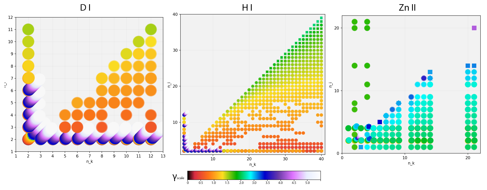
| For each tile: | |
| Placement | Quantum numbers, \((n_i,n_k)\) as plotting coordinates |
| Color | Recursion depth (the specific \(\gamma\) bin where resonance occurred) |
| Rotation | Resonant-pair density at (\(n_i,n_k,\gamma\)). No physical rotation is implied. |
This method of visual encoding turns scatter into structured geometry: every ion acquires a distinctive, reproducible “portrait” that highlights the recursive organization of its spectrum. Ions display unique forms — compact lattices in Al i, empty bands in Ni i, single towers in Cl xiii. No two portraits are alike, yet none resemble noise. Certain ions present strong symmetry and continuous \(\gamma\)-recursion depth, whereas others appear asymmetric. Empty quantum axes suggest regions of dark geometry or structured transitions. The contrast between tall towers and sparse tiles raises questions about active sites in the ion. A preliminary physical interpretation of these trends is explored in Section [sec:photoncodes].
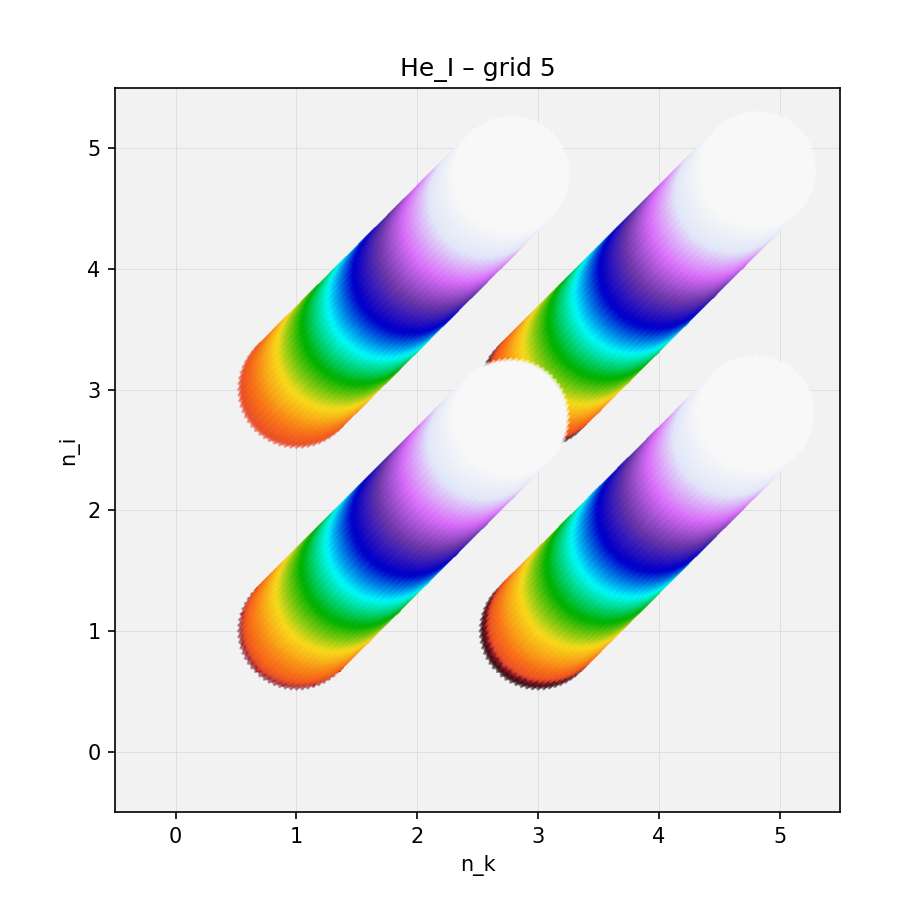
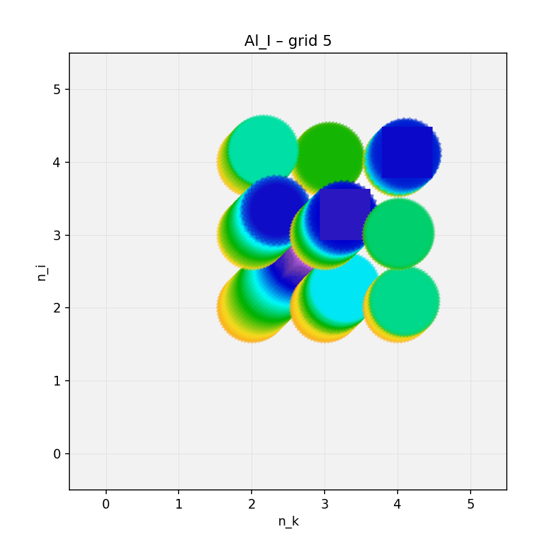
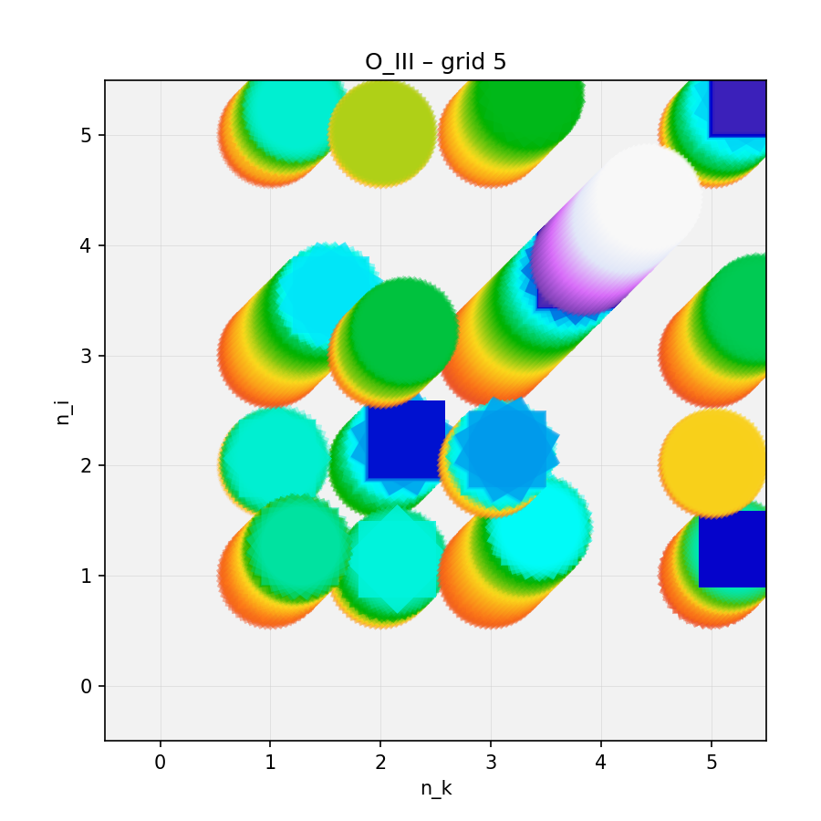
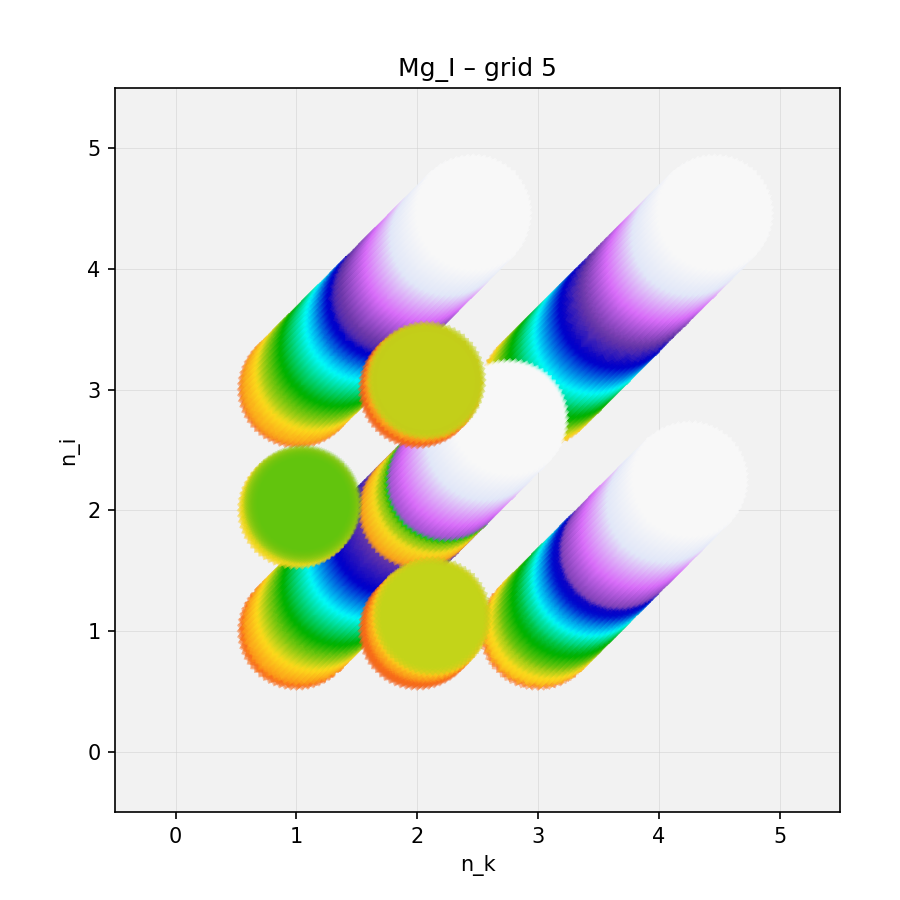
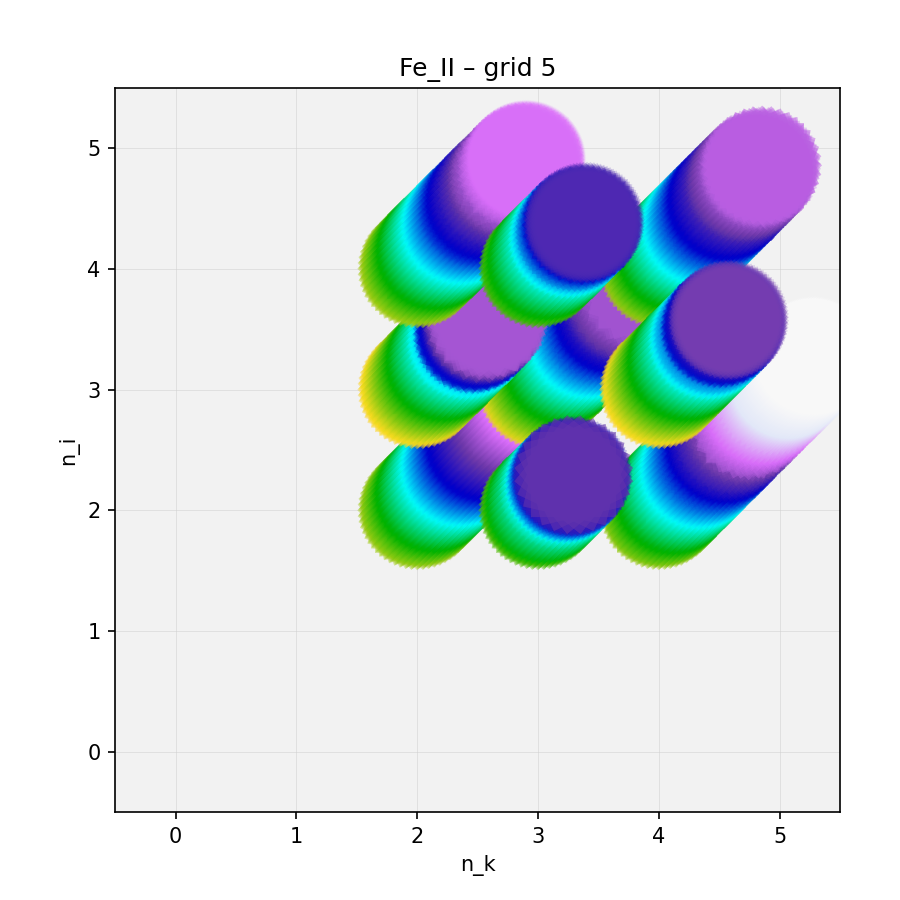
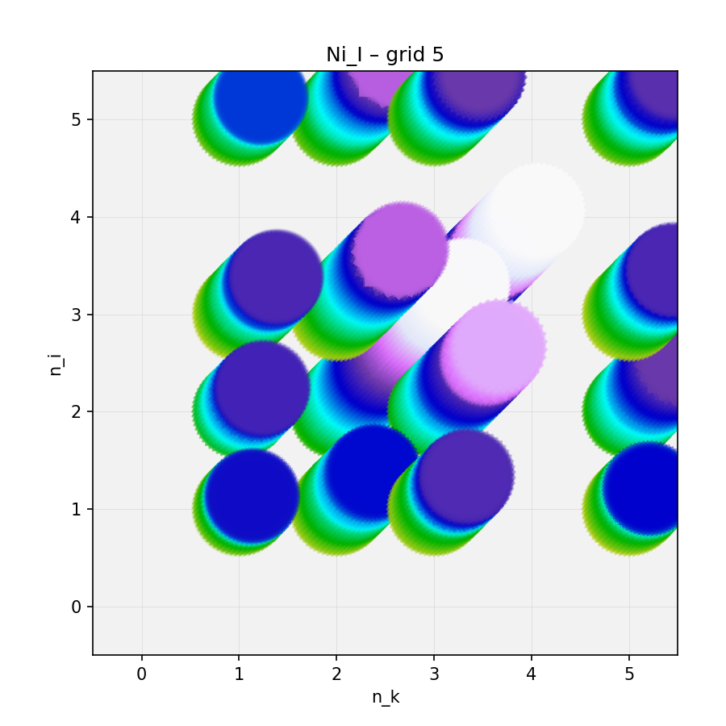
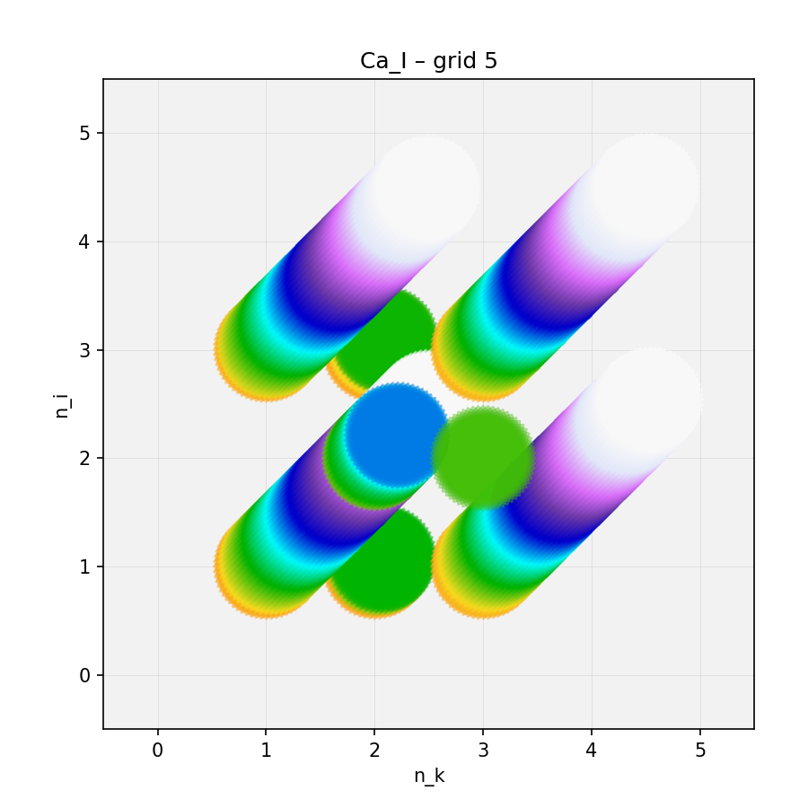
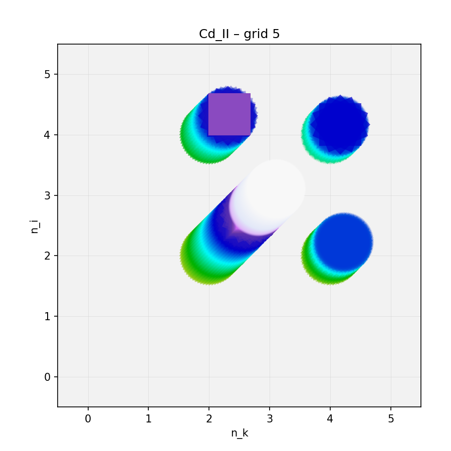
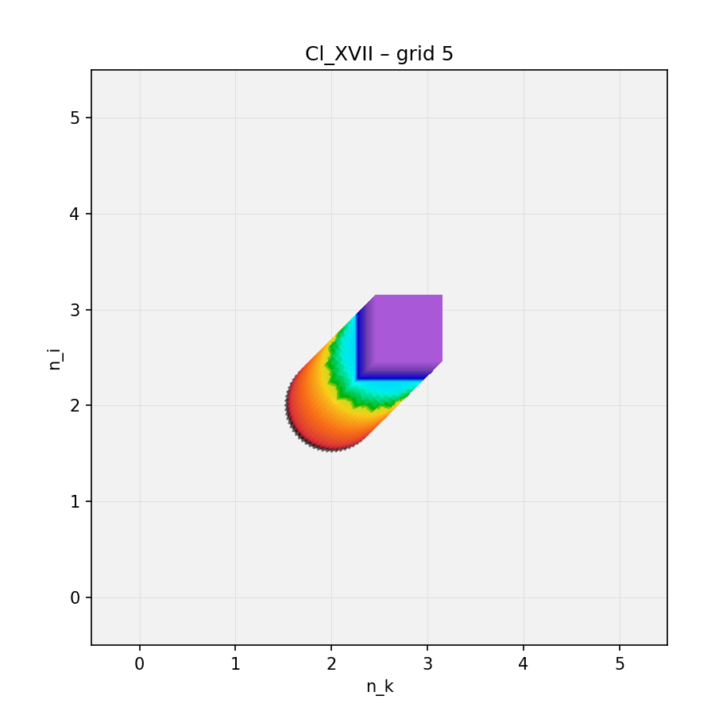
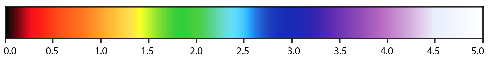
To test the physical accuracy of our gamma ladder, we conducted an experiment wherein we held \(\gamma\) constant and swept across \(\sigma\) values instead. We chose the H I 2p fine-structure (FS) doublet as our target because it has been well-characterized at \(\Delta\nu_{\mathrm{fs}}=10.969\) GHz (equivalently \(\Delta E_{\mathrm{fs}}\approx0.04537\) meV). This single empirical datum enabled us to determine where in our pre-built \(\gamma\)–ladder to probe for \(\sigma\) to see whether we could recover the fine-structure constant from a known energy level. As a control, we selected a \(\gamma\) bin of the H I dataset for which resonant pairs exist, but no fine-structure visibility has been documented in the literature. Our falsifiable premise was that we should recover the fine-structure constant where it has been empirically measured, but find nothing in \(\gamma\) regions where it is undetectable by empirical measurement.
Target law. Level spacings in the ladder follow \[\Delta E_{\mathrm{target}}(\sigma,\gamma) = E_0\,Z^{2}\,\hat{\mu}\,\sigma^{\gamma}, \qquad E_0=13.6057\,\mathrm{eV},\; Z=1,\; \hat{\mu}\simeq 1.\] Locating the \(\gamma\) window. We use a nominal \(\sigma\approx\alpha\) only as a coordinate to index \(\gamma\). Solving \[\Delta E_{\mathrm{fs}}=E_0\,\sigma^{\gamma^{*}} \;\;\Rightarrow\;\; \gamma^{*}=\frac{\ln(\Delta E_{\mathrm{fs}}/E_0)}{\ln\sigma}\] gives \(\gamma^{*}\simeq 2.563\) for H I. We then define a narrow symmetric window around this value, e.g. \(\gamma\in[2.5620,2.5646]\) with \(\Delta\gamma=5\times 10^{-4}\), refined later to \(2.5\times 10^{-4}\). This fixes where in the \(\gamma\) ladder to test while sweeping for a range of \(\sigma\).
Residual definition. Within this window we sweep \(\sigma\) and compute the levels-only residual \[r(\sigma,\gamma) = \left\lvert \Delta E_{\mathrm{target}}(\sigma,\gamma) - \Delta E_{\mathrm{fs}}^{\mathrm{exp}} \right\rvert.\] For each \(\sigma\) the optimal bin is \[\gamma^{*}(\sigma) = \operatorname*{arg\,min}_{\gamma}\, r(\sigma,\gamma),\] followed by a 3-point quadratic interpolation around \(\gamma^{*}\).
De-aliasing. Because \(\gamma\) is sampled discretely, \(\gamma^{*}\) locks and then hops as \(\sigma\) drifts, producing a ripple in \(r_{\min}(\sigma)\) that is purely instrumental. To suppress this alias, we run two interlaced meshes (a base step \(\Delta\gamma\) and a half-bin offset), yielding \(r_{\min,\mathrm{base}}^{\mathrm{cont}}(\sigma)\) and \(r_{\min,\mathrm{offs}}^{\mathrm{cont}}(\sigma)\). The envelope \[r_{\mathrm{env}}(\sigma) = \min\!\left\{ r_{\min,\mathrm{base}}^{\mathrm{cont}}(\sigma),\, r_{\min,\mathrm{offs}}^{\mathrm{cont}}(\sigma) \right\}\] defines the objective. A stability mask further down-weights any \(\sigma\) where the meshes disagree strongly (large difference or a \(\gamma^{*}\) hop).
Instrumental resolution. The ripple period of \(r_{\mathrm{env}}(\sigma)\) near its trough provides an empirical \(\sigma\) scale: \[\sigma_{\mathrm{instr}}\;\approx\;\tfrac12\,\Delta\sigma_{\mathrm{period}}^{\mathrm{emp}}.\] This serves as the effective resolution limit of the sweep, analogous to a Nyquist bound.
Resonant vs. non-resonant \(\gamma\) windows in H I. We scanned \(\sigma \in [0.0072946,\,0.0072996]\) with step \(\Delta\sigma = 2\times 10^{-7}\), using both the base \(\gamma\) grid and a half-bin offset to suppress aliasing. In the control window (H I: \(\gamma\approx0.3400\pm0.0020\)), the de-aliased envelope \(r_{\rm env}(\sigma)\) was monotone with no stable minimum (\(\hat{\sigma}\) undefined), the alias-unstable fraction was unity (\(f_{\rm alias\text{-}unstable}=1.0\)), and no measurable ripple period could be recovered (instrumental \(\sigma\)-resolution undefined).
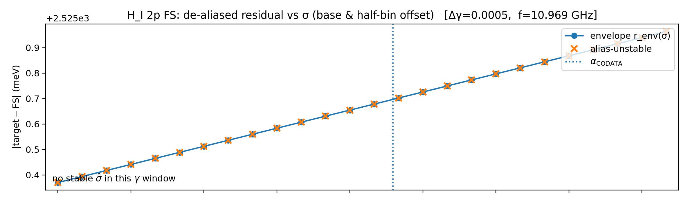
By contrast, in the fine-structure anchored window (H I 2p, \(\gamma\approx2.562\)–2.565), the identical procedure yielded a well-defined minimum \(\hat{\sigma}\) within a few \(\times 10^{-6}\) of \(\alpha_{\rm CODATA}\), accompanied by clear envelope oscillations with ripple period \(\Delta\sigma_{\rm ripple}\) and a finite instrumental resolution \(\Delta\sigma_{\rm instr}\approx\Delta\sigma_{\rm ripple}/2\). Thus, identical instrumentation produces qualitatively different outcomes depending on the \(\gamma\) window: oscillatory structure and \(\sigma\)-locking arise only in the fine-structure \(\gamma\) window, confirming that the effect is physical and not an artifact of the \(\sigma\)-scan.
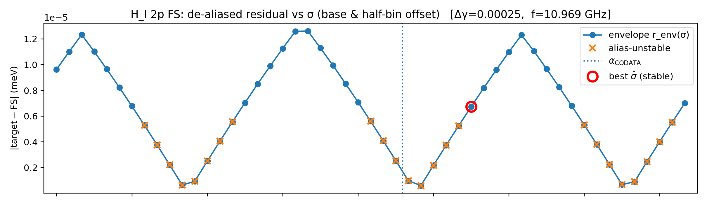
| Case | \(\gamma\) window | \(N_{\sigma}\) | |||
| unstable | \(\hat{\sigma}\) | Resolution | |||
| H i (non-res control) | \(0.3400\pm0.0020\) | 26 | 1.00 | undefined | undefined |
| H i (2p FS, resonant) | \(2.562\)–\(2.565\) | 51 | 0.47 | \(0.0072979\) | \(\Delta\sigma_{\text{instr}}\!\approx\!8.8\times10^{-7}\) |
The \(\sigma\)–sweep recovers \(\hat{\sigma}\) consistent with \(\alpha\) only in the FS-anchored \(\gamma\) window; in control windows, no stable minimum or resolution is found. Having established that the \(\gamma\)-ladder is a non-circular pipeline anchored in hydrogenic physics and supported by permutation-based significance testing in Phase I of our pipeline (Section 3.1), we now turn to Phase II: re-associating photons.
After Phase I fixes a level-derived recursion coordinate \(\gamma\) (no lines used), Phase II brings photons back in a post hoc projection. For each resonant pair of levels, we compute the trial photon wavelength \[\lambda_{\text{photon}} = \frac{hc}{\Delta E},\]
where \(\Delta E\) is the observed energy spacing. These trial photons are then compared against the official NIST catalogue of measured spectral lines.
Matching window. Because both the computed \(\lambda_{\text{photon}}\) and the tabulated NIST lines carry uncertainties, we define a combined window in which a match is considered valid. This window has two parts:
1. A statistical component, given by \(\pm 2\) standard deviations (\(\sigma\)) of the combined grid uncertainty. This is the natural \(95\%\) confidence interval for the photon–line comparison.
2. A physical floor, which ensures that the window is never unrealistically narrow. The minimum allowed tolerance is 2–5 nm, chosen adaptively depending on photon energy. This safeguard is especially important at long wavelengths, where absolute errors in tabulated lines are larger, and prevents genuine photon matches from being discarded due to tiny numerical offsets.7
Nearest-line assignment. For each candidate photon, we record the nearest NIST line within the allowed window and store the residual difference \(\Delta\lambda\) in picometers. This residual provides a quantitative diagnostic: small \(\Delta\lambda\) indicates a precise alignment, while larger values signal the edge of tolerance. Per-ion match files are written as CSV, and global overlays (CSV/Parquet) are compiled for downstream analysis. Histograms of \(\Delta\lambda\) are generated as a quality check to ensure that residuals are centered and not systematically biased.
One of the key accomplishments of our \(\gamma\)-ladder construction is non-circularity. The recursion coordinate \(\gamma\) is defined from level spacings alone; photons are overlaid only after this levels-only stage. Subsequent slope and intercept fits (Sections 4.1.1 and 5.1) are therefore independent of how \(\gamma\) was computed. This separation is critical: it ensures that the striking regularities observed in photon spectra cannot be artifacts of the coordinate definition. The photon overlay stage likewise acts as an independent validation: photons “fall into place” along the recursive ladders only if the geometry discovered from levels is real.
The universal slope is not explained by how many photons fall into each \(\gamma\) bin. As shown in Figure 6, simply counting photons per \(\gamma\) yields irregular, ion-specific histograms with no coherent trend. By contrast, plotting the frequencies of those photons against \(\gamma\) reveals a consistent decay that straightens in \((\gamma,\log_{10}\nu)\) to a slope \(\beta \approx \log_{10}\alpha\).
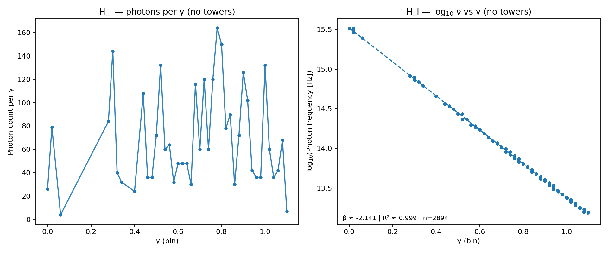
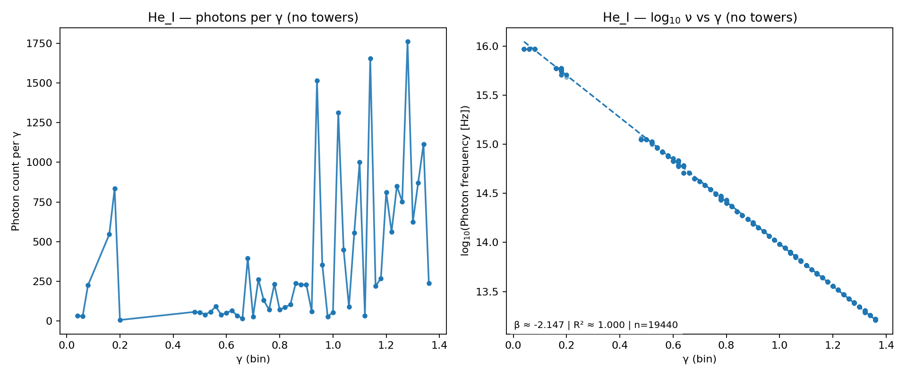
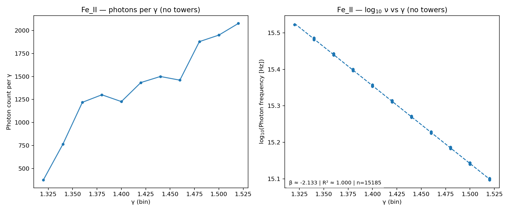
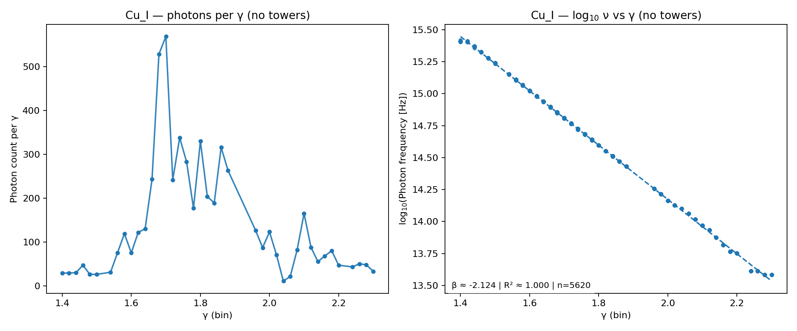
Figure 6 demonstrates Lemma 1: photons associated with \(\gamma\)-resonant level pairs obey \[\nu(\gamma) \;\propto\; \alpha^{\gamma}.\] Plotted in \((\gamma,\log_{10}\nu)\) this straightens to \[\log_{10}\nu \;=\; \chi + \beta \gamma, \qquad \beta = \log_{10}\alpha,\] where the tilt \(\beta\) is fixed by the \(\alpha\)-anchored frame. Remarkably, what decreases from left to right along the \(\gamma\) axis is the actual photon frequency \(\nu\) plotted in \(\log_{10}\) Hz. This frequency ordering is an empirical discovery of our method. Only by associating ion levels with the \(\gamma\) ladder did we unlock structure in the corresponding photon frequencies.
| Ion | \(n_{\mathrm{towers}}\) | \(\beta\) (slope) | \(\chi\) (baseline) | RMSE |
|---|---|---|---|---|
| Ba II | 1 | -2.123 | 18.986 | 0.0096 |
| Fe II | 24 | -2.132 | 18.340 | 0.0008 |
| H I | 46 | -2.102 | 15.498 | 0.0094 |
| He I | 4 | -2.137 | 16.120 | 0.0090 |
| He II | 1 | -2.141 | 16.130 | 0.0104 |
| Li I | 4 | -2.127 | 16.466 | 0.0106 |
| Li II | 4 | -2.147 | 16.488 | 0.0176 |
| Na I | 4 | -2.139 | 17.604 | 0.0087 |
| Zn II | 24 | -2.162 | 18.510 | 0.0032 |
Across ions, fitted slopes concentrate near \(\hat\beta\approx\log_{10}\alpha\) with negligible variance and \(R^2\!\sim\!1\) (Table 4). This confirms anchored tilt: the universal decay law is an empirical property of photons in the \(\gamma\) frame. The residual differences are small—typically only a few millidex in \(\beta\)—and can be interpreted as minor rotations of a common thread. What matters physically is not the slope itself, which is anchored, but the departures from it: structured local deviations (microslopes), intercept shifts \(\chi\), and the accumulation of torsion that leads to thread termination at the Planck floor. These are the subjects of the following sections.
After photons are re-assigned post hoc to our \(\gamma\) organized levels data, we produce a photon \(\gamma\)-ladder: a structured table whose rows are organized units indexed by (ion, site \((n_i,n_k)\), \(\gamma\)). Each row aggregates what the pipeline knows at that coordinate: the matched photons (overlay), the site’s context from Phase I (resonant-pair prevalence at that \(\gamma\)), and light‑weight diagnostics for the tower thread. Notably, rows with no valid photon match are omitted from the ladder (but may be referenced in earlier data constructs as needed for specific calculations). Photon \(\gamma\)-ladders are the reproducible substrate on which conduct our second order calculations.
How \(\gamma\) ladders are built. We take the significant \(\gamma\) bins and tower sites \((n_i,n_k)\) established in Phase I (levels-only) and then attach observed photons to their parent level pairs — without redefining \(\gamma\). Each matched photon brings a measured wavelength from NIST, which we convert to frequency for summaries; \(\gamma\) remains the Phase I bin carried in the overlay. We then index the re-associated photons by (ion, \(n_i\), \(n_k\), \(\gamma\)-bin) to produce one rung per tower per \(\gamma\), recording mean log-frequency, quantity of photons, and provenance.
For every (ion, \((n_i,n_k)\), \(\gamma\)) triple we retain:
a photon summary at that coordinate (mean \(\log_{10}\nu\), corresponding \(\Delta E\), residuals against the local fit);
Phase I context at the same \(\gamma\) (observed hit count and unique pairs; FDR‑adjusted significance \(q\));
site‑local evidence (number of photons matched at this rung);
minimal provenance (source of the frequency and the matched wavelength/line identifier).
The resulting per‑ion ladders are saved as tidy CSVs and feed all subsequent thread fits, microslope/phase estimates, CTI tests, and photoncode plots described in the following sections.
Tower partitioning refines, rather than creates, the geometry. The universal decay and parallelism are already present without towers; what quantum-number partitioning adds is physical resolution. Tower-specific intercepts \(\chi\) transport reduced mass and \(Z^{2}\), and tower-local microslopes reveal structured deviations (e.g., torsion corridors). Thus towers are not required to see the global decay law, but are indispensable for extracting the physics encoded in \(\chi\) and in local structure. To illustrate the tower-local view underlying intercept transport and microslopes, we show a representative \((n_i,n_k)\) example.
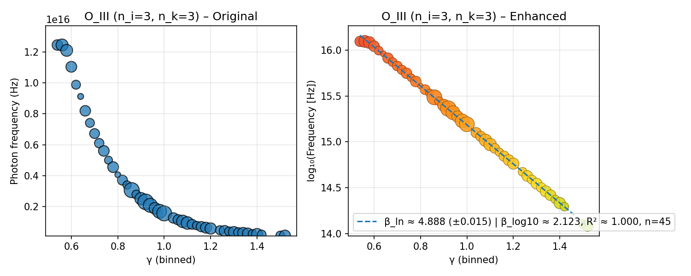
For each tower \((n_i,n_k)\) we fit the \(\alpha\)-affine model with the tilt locked, \[\log_{10}\nu \;=\; \chi_{n_i,n_k} + \beta\,\gamma \quad (+\,c\,\gamma^2\ \text{if AIC demands}), \qquad \beta \equiv \log_{10}\alpha, \label{eq:tower_fit_locked}\] and then extract tower-local microslopes and phases from windowed regressions, \[\delta(\gamma) \;=\; \beta_{\rm local}(\gamma) - \log_{10}\alpha, \qquad \theta(\gamma) \;=\; \arctan \beta_{\rm local}(\gamma). \label{eq:tower_microslopes}\] Here \(\chi_{n_i,n_k}\) transports the Einstein–Rydberg base, reduced mass \(\hat\mu\), and \(Z^2\) (with site factors), while \(\delta(\gamma)\) captures structured deviations (e.g., torsion corridors) that are invisible in the pooled bands. In the following sections, we introduce the intercept formalism, reliability filters, and tower-level diagnostics that allow isotope shifts, hydrogenic collapse, and microslope analysis. Tower grouping is not required to establish the slope, but it becomes essential for later applications.
The results of our stepwise organization by \(\gamma\) reveals that the slope of light frequency decays universally at approximately \(\hat\beta\approx\log_{10}\alpha\) with negligible variance and \(R^2\!\sim\!1\). This establishes anchored tilt as a global property of the \(\alpha\)-affine Thread Frame and is the geometric key to unlocking order in atomic spectra. Once the slope is fixed, physics may be studied in the vertical offsets \(\chi\) and structured local departures from anchored tilt, both of which we treat in the sections ahead.
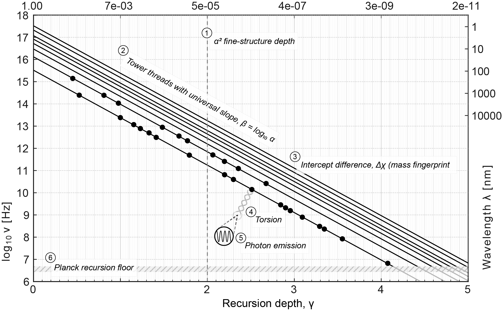
Inputs. Tidy NIST ion levels (vacuum).
\(\gamma\) resonance. For an ion at recursion depth \(\gamma\), a \(\gamma\)-resonance occurs when the spacing between two levels, \(\Delta E_{ik}=|E_k-E_i|\), lies within a \(\gamma\)-dependent tolerance \(\tau(\gamma)\) of the \(\alpha^{\gamma}\)‑scaled hydrogenic spacing: \[\Delta E_{\mathrm{target}}(\gamma) = E_0\,Z^{2}\,\alpha^{\gamma}, \qquad E_0 = 13.6057~\mathrm{eV}\ \ (\text{Rydberg energy}). \label{eq:recursive_depth_again}\] Anchor. \(\gamma=0\) returns the hydrogenic Rydberg scale \(E_0Z^2\), while \(\gamma=2\) gives the familiar fine‑structure order \(E_0Z^2\alpha^{2}\). Formally, the resonance condition is \[\big| \Delta E_{ik} - \Delta E_{\mathrm{target}}(\gamma) \big| \;\leq\; \tau(\gamma) , \label{eq:resonant_pair}\] with statistical significance determined by comparing \(H_{\mathrm{obs}}(\gamma)\) to the bootstrap null distribution.
Tower grouping. Group \(\gamma\)-resonant levels by by \(\gamma\)-attractor affinity to form towers by principal-quantum-number site \((n_i,n_k)\).
Inputs. Level-derived \(\gamma\) ledger and \(\gamma\)-attractor affinity (from Phase I); tidy NIST ion lines (vacuum).
Overlay. For each significant \(\gamma\) bin and resonant level pair \((i,k)\), form a trial photon \(\lambda_{\text{photon}}=hc/\Delta E\) and match to the nearest NIST line within a combined window: (i) \(\pm 2\sigma\) statistical band (grid uncertainty), plus (ii) an energy-dependent wavelength floor (2–5 nm). Record residuals \(\Delta\lambda\) (pm) and keep only rows with a valid match.
Tower grouping. Associate matched photons with the \(\gamma\)-resonant levels data organized by principal-quantum-number site \((n_i,n_k)\) to form per-tower sets (from Phase I).
thread fits. For each tower, fit the Thread Frame \[y(\gamma)=\chi+\beta\,\gamma \quad \big(+\,c\,\gamma^2 \ \text{if }\Delta\mathrm{AIC}\le -2\big),\] under reliability gates: \(\ge 6\) distinct \(\gamma\) bins, total photon weight \(\ge 30\), RMSE \(\le 0.025\) dex. Slopes cluster near the universal value \[\beta \approx \log_{10}\alpha\]
The following sections illustrate how this framework simplifies complex spectra, reveals universal linear relations, and identifies cross-ion relationships that are hidden in conventional views. We outline several analyses that become possible once spectra are reorganized by \(\gamma\) and by principal quantum numbers.
Using the \(\gamma\) ladder, we demonstrate:
Across all ions, fitted slopes \(\beta\) cluster tightly at \(\log_{10}\alpha\), giving \(k \equiv \beta/\log_{10}\alpha \approx 1\) with narrow variance. This photon co-linearity allows us to use the \(\alpha\)-Affine Thread Frame to examine per-ion, per-tower intercepts, \(\chi\) (Section 5.1) and local microslope deviations (Section 5.2). \[\log_{10}\nu \;=\; \chi + \beta\,\gamma , \tag{\ref{eq:thread_frame}}\] where \(\beta\) is the universal slope (tilt) and \(\chi\) is the thread baseline (the log-frequency at \(\gamma=0\)).8
Baselines encode reduced mass and hydrogenic scaling. With slope locked near \(\log_{10}\alpha\), the baseline \(\chi\) shifts systematically with reduced mass and \(Z^2\). For isotopes, \[\Delta\chi \;\simeq\; \log_{10}\!\left(\frac{\mu_B}{\mu_A}\right),\] consistent with isotope-shift physics.9
Microslopes reveal local structure. Windowed regressions yield \(\beta_{\mathrm{local}}(\gamma)\). Deviations \(\delta(\gamma)\) and angles \(\theta(\gamma)\) mark emission “hot spots” and tower hand-offs. Support ceilings and microslope spikes define a raw recursion limit \(\gamma^\ast\) and suppression factor \(\Lambda=\alpha^{\gamma^\ast}\).10
Normalized recursion depths collapse across ions. Raw recursion limits \(\gamma^\ast\) vary from ion to ion, but after correcting for reduced mass, \(Z\), and a mild density factor, these values converge to a common normalized depth \(\gamma_0\). We interpret this shared bound as a Planck refusal floor: evidence that emission halts at a finite recursion limit rather than extending indefinitely.11
Cross-thread intersections (CTI). By projecting photons with their local microslopes, we predict overlaps between different ions’ ladders. In a He ii \(\leftrightarrow\) O iii test, we observed significant overlaps (including \(\lambda=23.638\) nm) under both vacuum and \(v_{\mathrm{turb}}=20\) km s\(^{-1}\) conditions.12
Photoncodes (photons-only identity). Because slopes are universal, spectra can be collapsed to \(\chi\)-invariant binary photoncodes on a fixed \(\kappa\) lattice. These demonstrate that structure is recoverable from photons alone, providing a new coordinate framework for spectral identity. Applications to molecules (e.g. perfume IR spectra) illustrate this principle but are secondary to the photons-only proof.13
Compact synthesis (conjectural). The thread tilt is fixed by \(\alpha\) and the baseline transports the Einstein–Rydberg scale. Together these motivate the Einstein–Rydberg Anchor (conjecture), \(E = mc^{2} + h\nu_{\min},\) presented as falsifiable synthesis rather than a settled law. In this anchored form, we speak of the \(\alpha\)-Affine Thread Frame, where the baseline satisfies \[\chi \;\approx\; \log_{10}\!\Bigg(\frac{\alpha^2}{2}\,\frac{m_e c^2}{h}\Bigg) + \log_{10}\!\big(\hat{\mu}\,Z^2\big) + \log_{10}\!\big(\mathcal{F}_{\rm site}\big), \tag{\ref{eq:intercept}}\] with \(\alpha\) the fine-structure constant, \(m_{e}\) the electron mass, \(c\) the speed of light, \(h\) Planck’s constant, \(\hat{\mu}\equiv \mu/m_e\) the reduced-mass ratio, \(Z\) the nuclear charge, and \(\mathcal{F}_{\mathrm{site}}\) a site-specific correction factor.
We have only touched the surface of potential applications for the \(\alpha\)-affine Thread Frame, but initial results already demonstrate a rich suite of new analytical tools.
With the universal slope \(\beta \approx \log_{10}\alpha\) established, a vertical offset between ion threads, the intercept (\(\chi\)), becomes evident.
Throughout our \(\beta\) slope analysis and presentation, we use a level-derived \(\gamma\) (geometry gauge). For mass intercept tests (isotopes, hydrogenic collapse) we switch to a site-normalized gauge, \[\gamma_{\rm site} \;=\; \log_{\alpha}\!\left(\frac{\Delta E}{E_{0} Z^{2}}\right),\] which moves the explicit \(Z^{2}\) factor into the intercept. In this gauge, \(\chi\) carries the reduced-mass and Coulomb scaling (Eq. [eq:intercept]), and becomes a clean diagnostic for isotope shifts and hydrogenic collapse.14 In practice we ingest postoverlay photon ladders (levels-only \(\gamma\) with NIST wavelengths), so tower labels \((n_i,n_k)\) and per-site \(\gamma\) are established upstream; the mass estimator then fits slopes and intercepts on these ladders (non-circular).
Writing the Einstein–Rydberg base scale explicitly, \[\log_{10}\nu \;=\; \underbrace{\log_{10}\!\Big(\tfrac{\alpha^2}{2}\,\tfrac{m_e c^2}{h}\Big)}_{\text{Einstein--Rydberg scale}} + \underbrace{\log_{10}\!\big(\hat{\mu}\,Z^2\big)}_{\text{mass \& charge}} + \underbrace{\log_{10}\!\big(\mathcal{F}_{\rm site}\big)}_{\text{tower/site factor}} + \beta^\star \gamma_{\rm site} \;(+\,c\,\gamma_{\rm site}^2), \label{eq:intercept_full}\] so that for a given tower \[\chi \;\approx\; \log_{10}\!\Big(\tfrac{\alpha^2}{2}\,\tfrac{m_e c^2}{h}\Big) + \log_{10}\!\big(\hat{\mu}\,Z^2\big) + \log_{10}\!\big(\mathcal{F}_{\rm site}\big). \tag{\ref{eq:intercept}}\] For two isotopes \(A,B\) of the same ion15, \[\Delta\chi_{B\!-\!A} \;\equiv\; \chi_B - \chi_A \;\approx\; \log_{10}\!\Bigg(\frac{\hat{\mu}_B}{\hat{\mu}_A}\Bigg), \qquad \hat{\mu}_X \;\equiv\; \frac{\mu_X}{m_e} \;=\; \frac{m_e\,M_X}{(m_e+M_X)\,m_e}. \label{eq:isotope-delta-chi}\]
Across one-electron ions, subtracting Coulomb and reduced-mass scaling collapses intercepts as defined by Equation [eq:chi_norm]: \[\chi_{\rm norm} \;\equiv\; \chi \;-\; 2\log_{10}Z \;-\; \log_{10}\hat{\mu},\] leaving tower/site factors clustered about a common baseline (modulo small quantum-defect/QED corrections).
For each tower we fit \(\hat\chi\) with the slope locked (or near-locked) and bootstrap confidence intervals over photons within the tower; tower medians are then combined per ion. For isotope comparisons we apply a label‑permutation null on matched towers and report the median \(\Delta\chi\) with bootstrap bands; for alignment control we also report a rows/\(\gamma\)‑permute statistic (which should center near zero). For hydrogenic \(Z\)‑collapse we report per‑ion medians (with CI\(_{68}\) across towers when \(N\!>\!1\)). Degenerate CIs occur when only a single tower passes reliability gates and should be interpreted as under‑sampled rather than high‑precision.
Under present catalog coverage D i is extremely sparse: only one matched tower survives our reliability gates in the current run16. As a result, the reference (mass–law) statistic \(\Delta\chi_{\text{ref}}\) is not computable (NaN), and the rows/alignment control is uninformative (one tower). Numerically, a single-tower estimate is not interpretable. We therefore report H \(\rightarrow\) D as data-limited and reserve a definitive isotope test for a richer D i ladder.17
| Pair | \(N_{\text{towers}}\) | \(\Delta\chi_{\text{pred}}\) | \(\Delta\chi_{\text{ref,obs}}\) |
|---|---|---|---|
| H i \(\rightarrow\) D i | 1 | \(1.18155\times10^{-4}\) | — (insufficient \(N\)) |
| Ion | \(Z\) | \(N_{\text{towers}}\) | Median \(\chi_{\text{norm}}\) (CI\(_{68}\)) |
|---|---|---|---|
| H i | 1 | 23 | 15.517853240 |
| He ii | 2 | 1 | 15.521263916 |
| Li iii | 3 | 1 | 15.520804638 |
| O viii | 8 | 1 | 15.518592122 |
The cross‑ion offsets relative to H i are +3.411, +2.951, and +0.739 millidex for He ii, Li iii, and O viii, respectively—consistent with a millidex‑scale collapse.
Across hydrogenic ions we find a common slope \(\beta\) with \(k\) within a few \(10^{-3}\) of unity, consistent with expected frame anchoring, confirming that tilt aligns according to the Thread Frame. We hypothesize that intercepts \(\chi\) carry the reduced‑mass and \(Z^2\) scaling while the slope tracks \(\alpha\), as expressed by Eqs. [eq:intercept] and [eq:chi_norm]. Using strictly non‑circular photon ladders, the hydrogenic \(Z\)‑collapse is evident at the millidex level across H i, He ii, Li iii, and O viii (Table 6); H i shows a genuine tower‑level CI, while heavier ions are under‑sampled but lie within the same millidex band. Our present hydrogenic baseline lies near \(\chi_{\rm norm}\!\approx\!15.518\)–\(15.521\). A precise metrological extraction of \(m_e c^2/h\) or \(R_\infty c\) from intercepts will require fuller tower coverage (especially beyond H i) and explicit modeling of the tower/site factor \(\mathcal{F}_{\rm site}\); nevertheless, the geometry already reproduces the expected scalings without per‑ion tuning. The H \(\rightarrow\) D isotope comparison is currently data‑limited (one matched tower in our run; reference statistic undefined), so we refrain from quantitative claims pending a richer D i ladder.18
Beyond hydrogenic ions, extending mass calibration requires tower‑resolved electronic factors. From Eqs. [eq:intercept] and [eq:chi_norm], the intercept decomposes into a universal Einstein–Rydberg scale plus hydrogenic and site terms; we group the latter as a tower/site factor \(\mathcal{F}_{\rm site}\) that subsumes specific/field shifts, quantum‑defect/correlation, and small relativistic/QED contributions. For hydrogenic ions, \(\mathcal{F}_{\rm site}\!\approx\!1\), so isotope differences \(\Delta\chi\) cleanly reflect the reduced‑mass ratio. In multi‑electron ions, however, variability in \(\mathcal{F}_{\rm site}\) at the \(10^{-3}\)–\(10^{-2}\) dex level overwhelms the tiny reduced‑mass signal (\(\lesssim\!10^{-7}\) dex in heavy species), so reliable mass prediction requires tower‑resolved electronic factors together with a calibrated \(\mathcal{F}_{\rm site}\).
Fitting slopes near \(\log_{10}\alpha\) is not a limitation; current challenges are sparse ladders (e.g., D i) and unmodeled intercept physics in \(\mathcal{F}_{\rm site}\).
Near‑term improvements: median per‑site reducer in ladder compression; stricter gates for slope estimation; optional \(\beta\)‑lock for pure intercept fits; expanded D i coverage.
Roadmap: complete the hydrogenic baseline \(\to\) tabulate \(\mathcal{F}_{\rm site}\) by tower \(\to\) incorporate NMS/SMS/FS coefficients (King‑style) \(\to\) hierarchical inversion for isotope masses.
Across principal–quantum–number towers, photons populate near-linear threads \[\log_{10}\nu=\chi+\beta\gamma\] with a universal tilt \(\beta\simeq\log_{10}\alpha\) (the Thread Frame). Departures from this global tilt are microslopes: \[\delta(\gamma)=\beta_{\text{local}}(\gamma)-\log_{10}\alpha, \qquad \theta(\gamma)=\arctan\!\beta_{\text{local}}(\gamma),\] estimated in tower-local sliding windows by ordinary least squares (OLS)19. In this frame, coherent runs of elevated \(|\delta|\) (torsion corridors) are interpreted as pre-plectoneme dynamics: the recursive thread stores twist until it becomes energetically favorable to convert into writhe as a localized loop, i.e. a photon event. This mirrors twist–writhe conversion in supercoiling mechanics, where the conserved linking number partitions as \(Lk = Tw + Wr\) (Calugăreanu 1959; White 1969; Fuller 1978), and buckling nucleates a plectoneme under tension (Neukirch and Starostin 2008; Skoruppa and Carlon 2022).
For each candidate center \(\gamma\), define the in-tower window \(\mathcal{W}_\gamma=\{(\gamma_j,y_j):|\gamma_j-\gamma|\le\Delta\gamma\}\), \(y_j\equiv\log_{10}\nu_j\), with support \(S(\gamma)=|\mathcal{W}_\gamma|\). We fit \[(\hat\chi_{\text{loc}},\,\beta_{\text{local}}(\gamma)) =\arg\min_{\chi,\beta}\sum_{(\gamma_j,y_j)\in\mathcal{W}_\gamma}\big(y_j-\chi-\beta\,\gamma_j\big)^2, \label{eq:microslope-ols}\] for \(S(\gamma)\ge 3\) (adaptive widening to \(\Delta\gamma\le 0.10\); two-point secant fallback; otherwise ). For small rotations about \(\bar\beta\approx\log_{10}\alpha\), we use \[\Delta\beta \approx (1+\bar\beta^{2})\,\Delta\theta_{\mathrm{rad}} \approx 0.097\,\Delta\theta^{\circ}.\]
Conventions. All logarithms are base–10 (dex). Microslopes are tower–local, unweighted OLS; photon weights apply only to global sheet fits. Angles are in radians unless stated. We denote the half–width by \(\Delta\gamma\) and the window support by \(S(\gamma)\). Windows with \(S(\gamma)<3\) are omitted (NA). Edge windows may be truncated; widening stops at \(\Delta\gamma=0.10\).
Motivated by supercoiling theory with coexisting straight and plectonemic phases under tension, we treat emission as a local buckling event once a contiguous neighborhood exceeds a strain threshold: \[\exists\,\gamma^\dagger\ \text{s.t.}\quad \big|\delta(\gamma)\big|\ge \delta_c\ \ \text{on a contiguous run in}\ \ [\gamma^\dagger-\Lambda,\gamma^\dagger+\Lambda], \label{eq:plectoneme-threshold}\] where \(\delta_c\) and \(\Lambda\) are data-level, tower-specific gate parameters (runs and IQR rules) implemented in our extractor (“torsion corridors”). In practice, torsion corridors precede the last observed photons and align with support ceilings and slope-edge features used by our limit analysis to identify the tower depth \(\gamma^\ast\). Here \(\delta_c\) is an empirical critical strain, directly analogous to the buckling torque measured in magnetic tweezers experiments on DNA supercoiling.
Each valid photon receives \((\gamma,\beta_{\rm local},\delta,\theta,S)\) in per-ion CSVs () and a combined table (). Optional, CTI–ready sequences (top \(K\) per \(\gamma\)) are exported for phase-coherent overlaps in Sec. 5.420.
| Ion | \(N_{\text{tot}}\) | \(N_{\text{stable}}\) | \(N_{\text{torsion}}\) | Var\(_{\text{stable}}\) (dex\(^{2}\)) | Var\(_{\text{torsion}}\) (dex\(^{2}\)) | Ratio T/S |
|---|---|---|---|---|---|---|
| Cu_I | 262 | 176 | 86 | 1.043\(\times\)10\(^{-2}\) | 5.543\(\times\)10\(^{-1}\) | 5.312\(\times\)10\(^{1}\) |
| H_I | 108 | 108 | 0 | 7.457\(\times\)10\(^{-1}\) | — | — |
| He_I | 172 | 131 | 41 | 7.094\(\times\)10\(^{-3}\) | 6.933\(\times\)10\(^{-1}\) | 9.773\(\times\)10\(^{1}\) |
| Ni_I | 334 | 171 | 163 | 1.954\(\times\)10\(^{-3}\) | 6.306\(\times\)10\(^{-1}\) | 3.227\(\times\)10\(^{2}\) |
We find regime-dependent variance: torsion corridors exhibit \(50\times\)–\(320\times\) larger \(\mathrm{Var}(\delta)\) than stable windows (Table 7), with torsion \(|\delta|\) reaching \(\sim1.5\)–\(2.1\) dex while stable windows sit near \(0.1\)–\(0.2\) dex. This anisotropy is not measurement noise; it is structured strain that precedes emission and is consistent with a twist\(\to\)writhe instability. Thus, photons correspond to plectoneme-like nucleation events: discrete writhe releases that preserve anchored tilt (torque plateau) while relieving accumulated twist. In DNA, the post-nucleation torque plateau coexists with a plectonemic segment while the rest remains straight; analogously, our threads retain the universal tilt \(\beta\simeq\log_{10}\alpha\) while local \(\beta_{\text{local}}\) spikes mark pre-release corridors. We use three tail-robust markers—support ceiling \(\gamma_{\text{sup}}\), torsion spike \(\gamma_{\text{spike}}\), and slope edge \(\gamma_{\text{edge}}\)—to summarize a tower’s depth \(\gamma^\ast=\mathrm{median}\{\gamma_{\text{sup}},\gamma_{\text{spike}},\gamma_{\text{edge}}\}\)21, which feeds the recursion-floor analysis.
The key takeaway is that torsion variance is consistently \(\sim 100\times\) greater than stable variance, supporting the interpretation of microslopes as pre-emission strain.
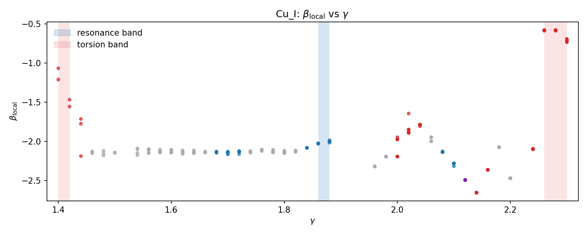
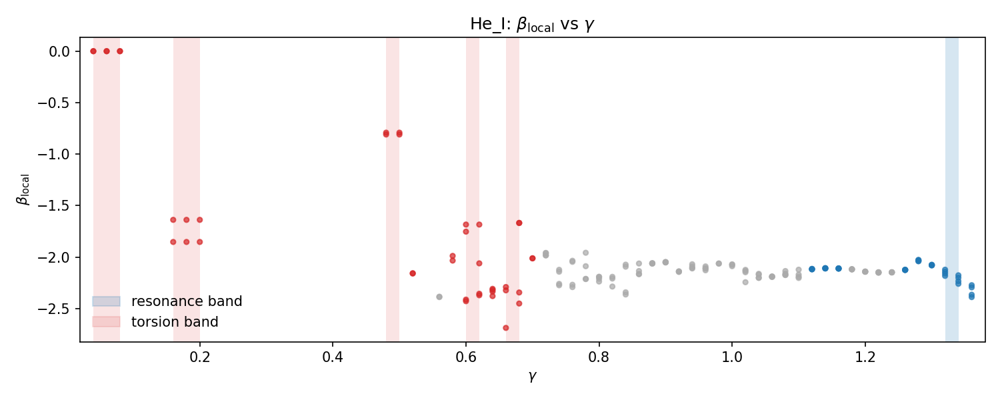
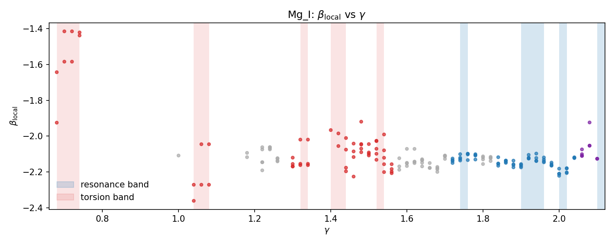
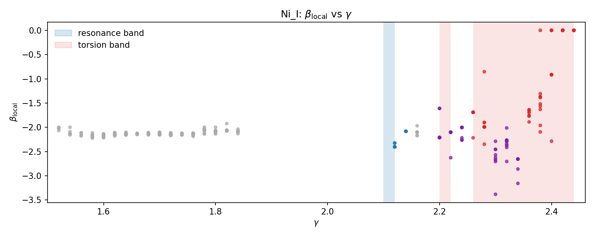
microslope_extractor.py. Sustained \(|\delta|\) runs precede emission and align
with the limit markers used in rgp_limit_analysis.py. CTI
uses the phase series \((\gamma,\theta(\gamma),\delta)\) to test
loop–loop coherence across ions
(CTI_cross_sheet_intersections.py).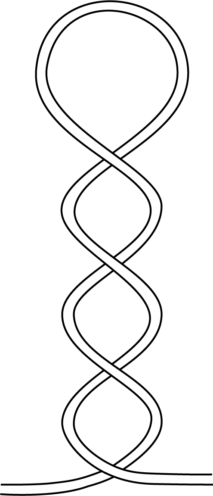
This mechanism parallels stretched-DNA supercoiling, where a straight segment coexists with a plectonemic segment past buckling torque and, at sufficiently large force/salt, the supercoil approaches a collapse geometry (minimal \(r\)) rather than an unbounded. By analogy, our Planck floor plays the role of a minimal loop/quantum: photons cannot be emitted with arbitrarily small quanta (\(E=h\nu\)), so the thread encounters a geometric/quantum bound at \(\nu_{\min}\). In this limit, steep/erratic \(\beta_{\rm local}(\gamma)\) is the most faithful predictor of imminent refusal: torsion runs intensify, resonance wells narrow, and CTI crossings, when present, reflect thread loop–loop couplings instead of continued sheet-linear flow. Thus the floor emerges not from breaking the Thread Frame but from the geometry of loop formation near a minimal quantum: \(\nu_{\text{target}}(\gamma)\to\nu_{\min}\) while the sheet’s universal tilt is preserved and emission terminates at \(\gamma^\ast\).
The regimes in Fig. 10 admit a unified reading in terms of loop nucleation under tension. As recursion depth increases, the global sheet \(\log_{10}\nu=\chi+\beta\gamma\) with \(\beta\simeq\log_{10}\alpha\) drives the target frequency \(\nu_{\text{target}}(\gamma)\) toward a finite floor \(\nu_{\min}\). In the plectoneme analogy, emission requires converting stored twist into a local loop with curvature scale \(r(\gamma)\). Near the floor, two signatures emerge in our data: (i) support thinning (silent intervals) and (ii) coherent torsion corridors (sustained spikes in \(|\delta(\gamma)|=\big|\beta_{\rm local}-\log_{10}\alpha\big|\))22. Operationally, we interpret these corridors as pre-plectoneme zones where the cost of additional twist exceeds the cost of writhe, but the loop required to thread (\(\beta\)-locked family) would imply a curvature (or energy quantum) below admissible scale. At that point the system refuses smooth release: either a final photon is emitted at the geometric envelope, or emission halts (support ceiling), yielding the tower depth \(\gamma^\ast\).
If the terminal photon corresponds to nucleation of a local thread loop, the admissible loop energy/curvature at the end of a tower inherits the hydrogenic envelope. In Coulomb units that envelope enters as \(Z^{2}\hat{\mu}\), so two ions that share the same loop threshold (same geometric terminus) will differ only by this prefactor. To compare geometry rather than ion-specific scale, we absorb the \(Z^{2}\hat{\mu}\) factor into the exponent and work with a normalized depth, \[\boxed{\,\gamma_{0} \equiv \gamma^{\ast} + \log_{\alpha}\!\left(Z^{2}\hat{\mu}\right)\,}, \qquad \boxed{\,\Lambda \equiv \alpha^{\gamma^{\ast}}\,}.\]
This definition implies \[\alpha^{\gamma_{0}} \;=\; Z^{2}\hat{\mu}\,\alpha^{\gamma^{\ast}},\] so ions that share the same geometric terminus collapse in \(\gamma_{0}\) even when their raw recursion limits \(\gamma^{\ast}\) differ. In other words, raw depths vary across species because the \(\alpha\)-Affine Thread Frame carries explicit hydrogenic scaling: increasing \(Z\) or \(\hat{\mu}\) shifts a tower horizontally in \(\gamma\). Normalizing by \(\gamma_{0}\) removes this scaling and isolates the geometry of the loop bound.
If the Planck-anchored floor of Conjecture C1 is universal, then \(\gamma_{0}\) should cluster across one-electron ions (up to mild density effects), even where the unnormalized \(\gamma^{\ast}\) values do not.
We estimate a recursion limit \(\gamma^{\ast}\) per tower from local thread diagnostics and then summarize to the ion by a pre-registered reducer (median across towers unless otherwise stated). This respects that the diagnostics are tower-local while enabling a single ion-level depth for cross-ion comparisons. With \(\beta_{\rm local}(\gamma)\) computed on windows \([\gamma-\Delta\gamma,\gamma+\Delta\gamma]\) within a tower, define \[\delta(\gamma)=\beta_{\rm local}-\log_{10}\alpha,\qquad S(\gamma)=\text{window photon count},\qquad V(\gamma)=\mathrm{IQR}\!\big(\delta(\gamma)\big).\] We extract three tail-robust markers: \[\begin{aligned} \gamma^{\rm sup} &= \inf\{\gamma:\ S(\gamma')=0\ \forall\,\gamma'>\gamma\}\quad\text{(support ceiling)},\\ \gamma^{\rm spike}&= \arg\max_{\gamma}\{\,V(\gamma):\ S(\gamma)\ge m_{\min},\ \gamma\ge\gamma_{\rm gate}\,\}\quad\text{(torsion spike)},\\ \gamma^{\rm edge} &= \arg\max_{\gamma}\left\{\,\left|\Delta\big(\mathrm{median}\,\beta_{\rm local}\big)/\Delta\gamma\right|:\ S(\gamma)\ge m_{\min},\ \gamma\ge\gamma_{\rm gate}\right\}\quad\text{(slope edge)}. \end{aligned}\] We then define the tower depth and scale factor by \[\boxed{\,\gamma^{\ast}_{\text{tower}}=\mathrm{median}\!\big(\gamma^{\rm sup},\ \gamma^{\rm spike},\ \gamma^{\rm edge}\big)\,}\qquad \boxed{\,\Lambda=\alpha^{\gamma^\ast_{\text{tower}}}\,}.\] Defaults. \(\Delta\gamma=0.04\) (expanded to \(0.10\) if needed), \(m_{\min}=3\), and \(\gamma_{\rm gate}\) the 50–60th percentile of the tower’s \(\gamma\) support (a neutral floor that focuses metrics on the high–\(\gamma\) erratic zone).
Support ceiling captures loop refusal: beyond \(\gamma^{\rm sup}\), the loop required to remain on the thread would imply sub-quantum curvature/energy, so emission halts.
Torsion spike marks the neighborhood where twist \(\to\) writhe conversion becomes energetically favorable but the admissible loop is at threshold (pre-plectoneme corridor).
Slope edge records the sharpest change in median local tilt consistent with nucleation/cessation of the final loop.
For an ion with multiple towers, we summarize by \(\gamma^\ast_{\rm ion}=\mathrm{median}_{\text{towers}}\,\gamma^\ast_{\text{tower}}\) (alternatively, the deepest normalized tower can be used; we report which rule is applied). We then form the hydrogenically normalized depth \[\boxed{\,\gamma_{0} \equiv \gamma^{\ast}_{\rm ion} + \log_{\alpha}\!\left(Z^{2}\,\hat\mu\right)\,}\,,\] which enables direct cross-ion comparison of geometric limits.
Probing the single photon floor hypothesis. Having defined \(\gamma^\ast\) and \(\gamma_0\), we now test whether tower termini align with a single geometric floor by mapping depths into a predicted minimum frequency via the Thread Frame; see next subsection for the floor construction and cross-ion collapse tests. Our working hypothesis is the compact Einstein–Rydberg conjecture \[E \;=\; m c^2 \;+\; h\,\nu_{\min}\,,\] with the provocative claim that a single, parameter‑free geometric envelope \(\nu_{\min}\) explains the lower termini of many spectroscopic “towers” (ordered photon ladders within fixed quantum labels) across distinct ions. In this view, the slope of approach is fixed by the fine‑structure constant \(\alpha\), the intercept carries the ion’s mass/charge via the reduced mass factor \(\hat\mu\), and an irreducible frequency floor is set by Planck quantization. Our experiments test whether this same \(\nu_{\min}\), computed from geometry alone, is already visible in observed photons.
For each ion we construct photon ladders and corresponding local microslopes \(\beta_{\mathrm{local}}\) as functions of the depth coordinate \(\gamma\) along a tower. Three tail-robust geometric markers are computed per tower:
\(\gamma_{\mathrm{sup}}\): the highest \(\gamma\) at which matched photons exist (support ceiling);
\(\gamma_{\mathrm{spike}}\): the tail \(\gamma\) maximizing a robust torsion score derived from the spread and median of \(\beta_{\mathrm{local}}\);
\(\gamma_{\mathrm{edge}}\): the tail \(\gamma\) at the largest finite difference in the median \(\beta_{\mathrm{local}}\) (slope edge).
We then define the tower depth \[\gamma^\ast \;=\; \mathrm{median}\{\gamma_{\mathrm{sup}},\,\gamma_{\mathrm{spike}},\,\gamma_{\mathrm{edge}}\}\,,\] and the predicted Planck floor \[\nu_{\min} \;=\; \nu_{R\infty}\,Z^{2}\,\hat{\mu}\,\alpha^{\gamma^\ast}, \qquad \nu_{R\infty} \;=\; R_\infty c \;=\; \frac{\alpha^{2}}{2}\,\frac{m_e c^{2}}{h}. \tag{\ref{eq:floor}}\] For interpretability we also report the normalized depth \[\gamma_0 \;=\; \gamma^\ast + \log_{\alpha}\!\big(Z^{2}\hat{\mu}\big),\] which factors out ion-specific \(Z^{2}\hat{\mu}\). 23 This procedure provides the operational definition of Conjecture C1 (Planck Floor): if the floor is universal, normalized depths \(\gamma_0\) should cluster across species even when raw \(\gamma^\ast\) values differ.
For hydrogenic ions we also compute \(\hat{\mu}\simeq 1 - 5.4858\times 10^{-4}/A\) (with \(A\) the mass number). The induced shift in \(\log_{10}\nu_{\min}\) is \[\Delta\log_{10}\nu_{\min} \;\approx\; \log_{10}\hat{\mu} \;\approx\; -\frac{5.4858\times 10^{-4}}{A\,\ln 10} \;\;=\;\; \begin{cases} -2.38\times 10^{-5}\ \text{dex} \;(\,0.0238~\text{millidex}\,),& A=10,\\[2pt] -2.38\times 10^{-6}\ \text{dex} \;(\,0.00238~\text{millidex}\,),& A=100, \end{cases}\] well below the geometric residual scale we visualize. Consistently, geometry-only and \(\hat{\mu}\)-corrected panels are indistinguishable at plot resolution, and per-ion summaries show negligible shifts in tower-terminal residuals when toggling \(\hat{\mu}\). 24
We treat Doppler plus microturbulence as a tolerance band (acceptance), not as a correction to the floor. For fiducial \(T=8000\,\mathrm{K}\), \(v_{\rm turb}=20\,\mathrm{km\,s^{-1}}\), and \(m\sim 20\)–\(60\,\mathrm{amu}\), the fractional width is \(\Delta\nu/\nu \sim \mathrm{few}\times10^{-4}\), i.e. \(\epsilon_{\log_{10}}\sim\mathrm{few}\times10^{-5}\,\mathrm{dex}\approx 0.05\)–\(0.1\) millidex—two orders of magnitude smaller than the geometric approach scale. Turning \(\epsilon\) on therefore raises “within‑one‑linewidth” rates (as intended) but does not move the geometric floor, leaving the envelope test unchanged. 25
We executed four cross‑ion sweeps: (i) all ions, geometry only (\(\epsilon\) off, \(\hat\mu\!=\!1\)); (ii) all ions with Doppler tolerance (\(\epsilon\) on, \(\hat\mu\!=\!1\)); (iii) hydrogenic subset with geometry only (\(\epsilon\) off, \(\hat\mu\!=\!\hat\mu(A)\)); and (iv) hydrogenic with Doppler tolerance (\(\epsilon\) on, \(\hat\mu\!=\!\hat\mu(A)\)). Cross‑experiment collation was summary‑driven (we read each ion’s JSON summary and then concatenated the linked tower tables), ensuring we used ground‑truth scenario tags instead of inferring from folder names. 26 A discovery report confirms summaries were found and parsed for all supplied roots and linked tower CSVs.
| Ion | Tower | Residual | Ion | Tower | Residual | Ion | Tower | Residual |
|---|---|---|---|---|---|---|---|---|
| Fe II | (3,114475) | 0.0000 | O I | (5,1) | 0.0000 | I I | (2,5) | 0.0001 |
| Hg II | (2,5) | 0.0002 | Cu I | (3,2) | 0.0002 | H I | (2,29) | 0.0002 |
| P I | (2,2) | 0.0003 | He I | (1,1) | 0.0004 | O III | (2,5) | 0.0004 |
| Zn II | (4,4) | 0.0004 | O VI | (2,4) | 0.0005 | Mn I | (4,2) | 0.0005 |
| Li I | (2,2) | 0.0005 | Ca II | (2,2) | 0.0007 | Ca I | (1,2) | 0.0008 |
| Cr II | (2,2) | 0.0010 | N I | (2,6) | 0.0010 | Li III | (2,2) | 0.0011 |
| Al I | (2,3) | 0.0016 | Cd II | (2,2) | 0.0021 | Na I | (3,2) | 0.0025 |
| Sr II | (2,2) | 0.0030 | Li II | (2,4) | 0.0035 | K I | (4,2) | 0.0019 |
| Mg I | (3,2) | 0.0029 | C IV | (4,4) | 0.0157 | Ni I | (1,2) | 0.0197 |
| C VI | (2,2) | 0.5955 | Cl XVII | (2,2) | 2.5590 |
Table 8 summarizes ion residual distances from the last emitted photon to Planck’s floor. “Resolves” means at least one tower’s last photons meet the geometric floor at sub‑millidex precision; “near‑miss” denotes a controlled gap above the floor (typically a shelf); “far” is materially above the floor (rare in our set). Across the full ion set, every species examined exhibits at least one tower whose terminal photon approaches the same geometric floor within a few millidex. Among the ions that we studied, Fe II is especially striking: multiple towers terminate almost exactly on the floor, with residuals \(\ll 1\) millidex. Given iron’s special role as the nuclear endpoint of stellar collapse, this “picture-perfect” alignment may warrant further attention from nuclear physicists, though a physical interpretation is beyond the present scope.
While each ion usually exhibits at least one tower that reaches (or effectively reaches) \(\nu_{\min}\), other towers in the same ion may terminate slightly above the floor. These near‑misses are often structured: we observe shallow, nearly horizontal shelves in \(\gamma\) just above the floor (e.g., Ni I, K I, O I), or tails that approach steadily and then stop (e.g., Ba II). We propose three non‑exclusive hypotheses:
Incomplete observed tails. NIST‑reported lines sparsify toward high \(\gamma\); the last one or two unobserved photons could plausibly close the remaining millidex gap.
Selection/branching constraints. Tower continuation may be geometrically permitted but channel‑suppressed by local selection rules or resonance gating, producing the observed “shelf.”
Benign modeling/meshing bias. Our robust median over \((\gamma_{\mathrm{sup}},\gamma_{\mathrm{spike}},\gamma_{\mathrm{edge}})\) slightly underestimates \(\gamma^\star\) in some tails; at millidex scale, this bias is visually indistinguishable from a single missing photon.
Importantly, when such gaps are \(\lesssim 1\)–\(3\) millidex, they are small compared to ion‑to‑ion variation in \(Z^2\) and well within reasonable expectations for observational completeness. We therefore interpret these near‑miss towers as consistent with the same universal floor.
Across a large fraction of ions surveyed, the lower termini of at least one tower per ion land on or within millidex of the same parameter‑free geometric envelope \(\nu_{\min}\) from Eq. [eq:floor], with no appeal to \(\hat\mu\) (hydrogenic) or \(\epsilon\) (Doppler). In many cases the terminal photons meet the floor at the \(\lesssim\!\mathrm{millidex}\) level; where a gap remains, it is typically small and structured (e.g., horizontal shelves just above the floor). Thus our data support the following concise statement: A single, parameter‑free geometric floor \(\nu_{\min}\) explains where towers end across many ions—often at millidex precision—without invoking hydrogenic \(\hat\mu\) or Doppler \(\epsilon\). Where towers terminate slightly above the floor, the gaps are small and structured, and are plausibly due to observational incompleteness and/or tower‑specific branching constraints rather than a failure of the floor itself. We conclude that the conjecture’s “\(mc^2\) + Planck floor” structure is visible in the data without fine‑tuning or per‑ion calibration.
An exciting implication of the Thread Frame is that orthogonal photon arrangements–organized along \(\gamma\)—can mediate ion–ion interactions. In Maxwell’s picture, conjugate field components live on orthogonal directions; here, local thread geometry encodes a release phase that can be used to test cross-ion coherence. We use the Thread Frame, microslopes, and limits to introduce a preliminary description of cross–thread intersections (CTI): coincidences that satisfy both a frequency gate and a phase-coherence gate.
For a photon on ion \(X\!\in\!\{A,B\}\) at \(\gamma=\gamma_X\), define \(y_X\equiv\log_{10}\nu_X\) and the local slope \(\beta_X(\gamma)\) from microslopes. A first-order (linear) projection across a small neighborhood \(\Delta\gamma\) is \[y_X(\gamma_X+\Delta\gamma)\;\approx\;y_X(\gamma_X) + \beta_X(\gamma_X)\,\Delta\gamma,\] with local release angle \(\theta_X=\arctan\beta_X\). A pair \((i,j)\) passes CTI if there exist offsets \(\Delta\gamma_A,\Delta\gamma_B\) such that \[|\,y_A' - y_B'|\;\le\;\epsilon_{ij}\quad\text{and}\quad |\theta_A-\theta_B|\;\le\;\Delta\theta_{\max},\] where \(y_X'\) is the projected \(\log_{10}\nu\) and \(\epsilon_{ij}=\max(\epsilon_{A,i},\epsilon_{B,j})\) is the per-pair linewidth tolerance. Quadratic projections with curvature \(\kappa_X\) are used where local support allows, with angles evaluated at the minimizing offsets.
Inputs: per-photon \((\gamma,y)\) with \(y\equiv\log_{10}\nu\), local slope \(\beta_{\rm local}\) (and curvature \(c\) where supported), and per-line
linewidths \(\epsilon_{ij}\)
(Doppler/turbulent).
Gate 1 — Frequency: \(|y_A' - y_B'|\le\epsilon_{ij}\)
with linear/quadratic jets evaluated at the minimizing offsets.
Gate 2 — Phase: \(|\theta_A-\theta_B|\le\Delta\theta_{\max}\)
(default \(5^\circ\); robustness
checked at \(6^\circ\)), where \(\theta=\arctan\beta_{\rm local}\).
Negative control: phase-scrambled ladders (preserving
frequency histograms) must not pass both gates at the observed
rate.
Reporting: edges that pass both gates are discoveries
under this protocol; we refrain from causal claims here and release
code/defaults to enable independent replication.
Local slopes \(\beta_{\rm local}(\gamma)\) are estimated by weighted least squares (WLS) on photon overlays within \(|\gamma-\gamma_0|\!\le\!\tfrac{1}{2}\Delta\gamma\). If support is marginal we fall back to secant estimates, and finally to the universal thread tilt \(\beta\simeq\log_{10}\alpha\). Quadratic fits \(y=a+bu+cu^2\) (\(u=\gamma-\gamma_0\)) yield \((\beta_0,c_0)=(b,2c)\) when curvature is enabled. 27
For CTI we estimate a phase field \[\theta = \arctan \beta\] by WLS on photon overlays in a local \(\gamma\)-neighborhood (weights \(\propto\) overlay support), with fallbacks to ladder OLS, secant, and finally the universal tilt \(\log_{10}\alpha\). When curvature is enabled, angles are enforced at the match point using the derivative of a local quadratic fit. This separation is deliberate: OLS microslopes capture tower-intrinsic local texture, while overlay-WLS phase emphasizes high-support neighborhoods for robust cross-ion alignment.
Per-line \(\epsilon_{X}\) is derived
from environment (Doppler width at temperature \(T\), with microturbulence \(v_{\rm turb}\)) or fixed as a scalar
tolerance: \[\epsilon_X \;\approx\;
\log_{10}\!\left(1+\sqrt{8\ln
2}\,\frac{1}{c}\,\sqrt{\frac{kT}{m_X}+v_{\rm
turb}^2}\right)\quad\text{(dex)}.\] The phase gate uses \(\Delta\theta_{\max}\) (default \(5^\circ\), robustness checked at \(6^\circ\)); with curvature and
–angle-at-match, the angles are enforced at the minimizing
offsets.
CTI recovers canonical hydrogen–oxygen fluorescence channels, including Ly\(\beta\) pumping of O i and cascades into the visible/IR. Representative matches include \[\begin{aligned} \SI{97.0916}{\nano\meter} &\text{ vs } \SI{97.0959}{\nano\meter} &&(\Delta\lambda=\SI{4.3}{\pico\meter}), \\ \SI{1213.796}{\nano\meter} &\text{ vs } \SI{1213.869}{\nano\meter} &&(\Delta\lambda=\SI{72}{\pico\meter}), \\ \SI{7239.883}{\nano\meter} &\text{ vs } \SI{7239.912}{\nano\meter} &&(\Delta\lambda=\SI{29}{\pico\meter}). \end{aligned}\]
These overlaps are well within Doppler/turbulent linewidths and correspond to well-studied O i fluorescence channels in nebulae and comets.
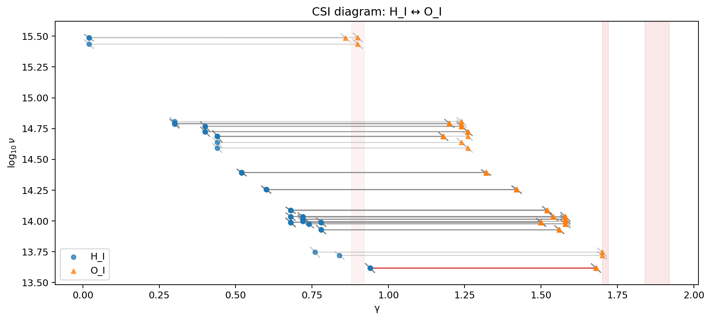
CTI also highlights biologically fundamental pairs. Sodium and potassium drive neuronal action potentials; here their spectra overlap with picometer precision across UV, visible, and IR bands. Examples include:
\[\begin{aligned} \SI{43.352}{\nano\meter} &\;\text{vs}\; \SI{43.350}{\nano\meter} &&(\Delta\lambda=\SI{2}{\pico\meter}), \\ \SI{588.750}{\nano\meter} &\;\text{vs}\; \SI{588.791}{\nano\meter} &&(\Delta\lambda=\SI{41}{\pico\meter}), \\ \SI{993.750}{\nano\meter} &\;\text{vs}\; \SI{993.722}{\nano\meter} &&(\Delta\lambda=\SI{27}{\pico\meter}). \end{aligned}\]
These coincidences are consistent with near–resonances across UV–IR.28
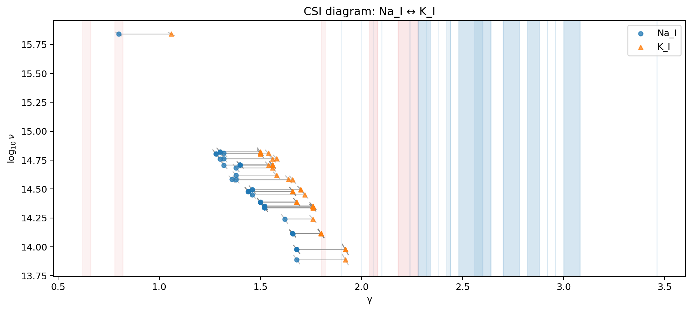
Beyond these case studies, CTI reveals picometer-scale overlaps in many ion pairs of astrophysical and biological relevance. Table 9 summarizes representative results.
| Ion Pair | Example \(\lambda_A\) [nm] | Example \(\lambda_B\) [nm] | \(\Delta\lambda\) [pm] | Known relevance29 |
|---|---|---|---|---|
| H i \(\leftrightarrow\) Fe ii | 89.978 | 89.992 | 14 | Ly\(\alpha\) pumping of Fe ii |
| He i \(\leftrightarrow\) O i | 260.1 | 260.2 | 100 | He-driven O i excitation |
| Ca ii \(\leftrightarrow\) Mg ii | 470.0 | 470.0 | 34 | Ion-channel gating pair |
| Ca ii \(\leftrightarrow\) Zn ii | 140.463 | 140.460 | 2.7 | Hypothesized Zn–Ca interaction (speculative) |
| Ca ii \(\leftrightarrow\) Fe ii | 346.4 | 346.4 | 12 | Synapse release \(\times\) neurotransmitter synthesis |
| Zn ii \(\leftrightarrow\) Cu i | 181.466 | 181.466 | 0.2 | Synaptic metalloproteins |
| Fe ii \(\leftrightarrow\) Cu i | 129.394 | 129.393 | 0.05 | Redox metabolism |
| O i \(\leftrightarrow\) Fe ii | 94.556 | 94.556 | 0.3 | Oxygen–iron metabolic coherence |
CTI does not connect arbitrary points. It enforces two gates: (i) projected frequency match within a physical linewidth, and (ii) phase coherence of local microslopes. With curvature enabled, angles are enforced at the match; otherwise linear jets are used. In this sense CTI operationalizes the orthogonal “life’’ of the Thread Frame. CTI requires coincidence in both frequency and phase. This two-gate structure ensures that overlaps are not accidental, but reflect genuine geometric coherence between ions (see Protocol P1 in Sec. 5.4).
CTI sensitivity depends on (a) overlay density near \(\gamma\), (b) the phase gate, and (c) curvature reliability. For example, the He ii–O iii Bowen pump at 303.78 Å did not pass under strict gates due to sparse overlay support; looser gates recovered nearby overlaps. Future work will densify overlays in target regions, implement orientation gates tied to attractor families, and test spline-based jets for weak curvature. If proven true and precision tuned, CTI could open new pathways for technology to engage with physics at the subatomic level.
The recursive geometry we have established so far begins with levels (\(\gamma\)-sweep), passes through towers and threads (slope \(\beta \approx \log_{10}\alpha\)), and culminates in intercept transport and microslopes with site-specific cross-thread interactions. But one might still ask: is this geometry dependent on our choice to start from levels, or can it be discovered with photons alone?
Photoncodes answer this challenge. To facilitate comparisons between atoms and molecules, we map each spectrum onto a fixed \(\kappa\)-lattice defined by the universal slope \(\beta \simeq \log_{10}\alpha\), discretized at a fixed bin width \(\Delta\kappa\), to obtain \(\chi\)-invariant binary sequences that recover recursive patterns directly from photons: \[\kappa \;=\; \frac{y - y_0}{\beta}, \qquad B(\kappa_j) \in \{0,1\}, \qquad y \equiv \log_{10}\nu .\] If the geometry were an artifact of levels, these encoded sequences would dissolve into noise. Instead, they remain structured and reproducible across ions and molecules, even revealing motifs in ions not chemically present, as demonstrated by the following experimental procedure.
For molecules, we have no levels data. Instead we used gas-phase IR spectra (JCAMP-DX format) from NIST for eight perfume-related organic molecules: linalool (78-70-6), coumarin (91-64-5), eugenol (97-53-0), isoeugenol (97-54-1), citronellal (106-23-0), geraniol (106-24-1), vanillin (121-33-5), and limonene (138-86-3). Peaks were detected automatically, converted to \(\log_{10}\nu\), remapped into \(\kappa\), and discretized on the same \(\Delta\kappa=0.002\) lattice.
A stand-alone molecular photoncode can be created as a data artifact with no other molecule or ion for comparison, but then much of the interpretive opportunity is lost. Thus we prepare a high-resolution photoncode library for ions by first building \(\gamma\) ladders from level spacings, then re-associating photons post-hoc to \((n_i,n_k,\gamma)\) towers and applying the Thread Frame fit. The sparse \(\gamma\)-rungs of ion towers \((n_i,n_k)\) built in Phase II of our pipeline are upsampled and reconciled onto the \(\kappa\) lattice (with offset \(C\), the per-ion \(\gamma\!\to\!\kappa\) translation constant) to create tower-specific \(\kappa\)-photoncodes for each ion. These tower photoncodes provide the vocabulary of elemental motifs against which unknown spectra are compared30. Interoperability of \(\gamma\) to \(\kappa\) for ions is calibrated with an offset, \(C\), in order that we can reconcile \(\gamma\)-associated levels data. Figure 14 illustrates a \(\gamma\)–photoncode for N_I.
To match a molecule’s whole-spectrum photoncode against the ion library, we scan the molecular photon code against every ion tower \((n_i,n_k)\) with the same best-shift metric and null, then control multiplicity with Benjamini–Hochberg FDR per ion. A retained motif is a contiguous run of coincident bins under the best shift for a specific tower. As shown in Figure 15, best-shift overlap is computed on the common ion-molecule grid resolution for maximum match fidelity, \(\kappa\), producing co-hit rasters per tower and a global Dice optimum.
The concurrence of recursive geometry in the same \(\kappa\) bins on the same quantum towers supports a precision data matching method whereby photon frequencies can be used for comparing tiny data signatures within and across different species of ions and molecules.
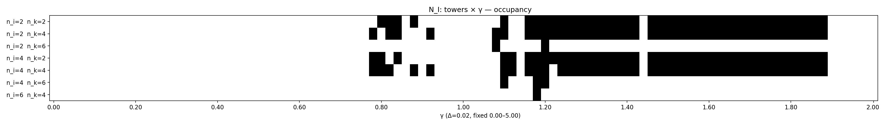
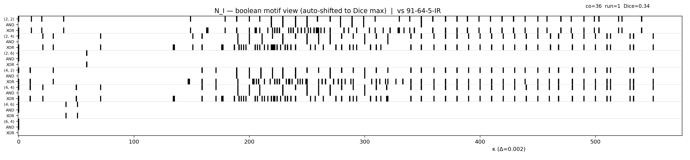
Both Eugenol and Isoeugenol share the same molecular formula, \(\mathrm{C_{10}H_{12}O_{2}}\), yet differ in structure and scent profile. We evaluated both molecules against our ion library to discover tower motifs. Next, we examined resonance between the resulting motifs. Eugenol’s 514 retained motifs form more than 40,000 harmonic relationships, whereas Isoeugenol produced only 310 motifs with about 3,939 harmonic edges under the same \(\leq 0.5\%\) error gate. Despite this difference in density, both molecules are dominated by the same harmonic intervals—octaves (2:1), fourths (4:3), fifths (3:2), and sixths (5:4)—and even share motifs on the same ion towers.
The similarities we observe between Eugenol and Isoeugenol are not explained by their familiar chemical structures, which are already nearly identical. We do not propose that these molecules actually contain Copper or Magnesium, but small, codified sequences thereof. We studied other molecules composed solely of Carbon, Hydrogen, and Oxygen,31, and the results support this "sampling" hypothesis: molecular motifs frequently match the geometry of ions that they do not chemically contain.
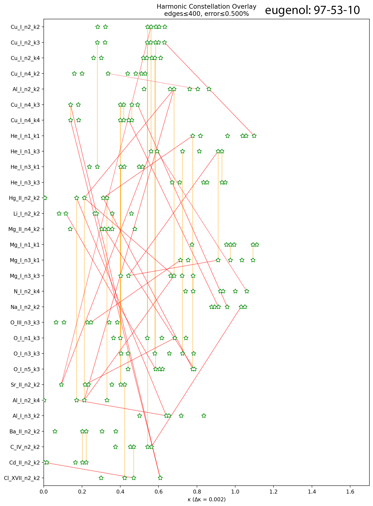
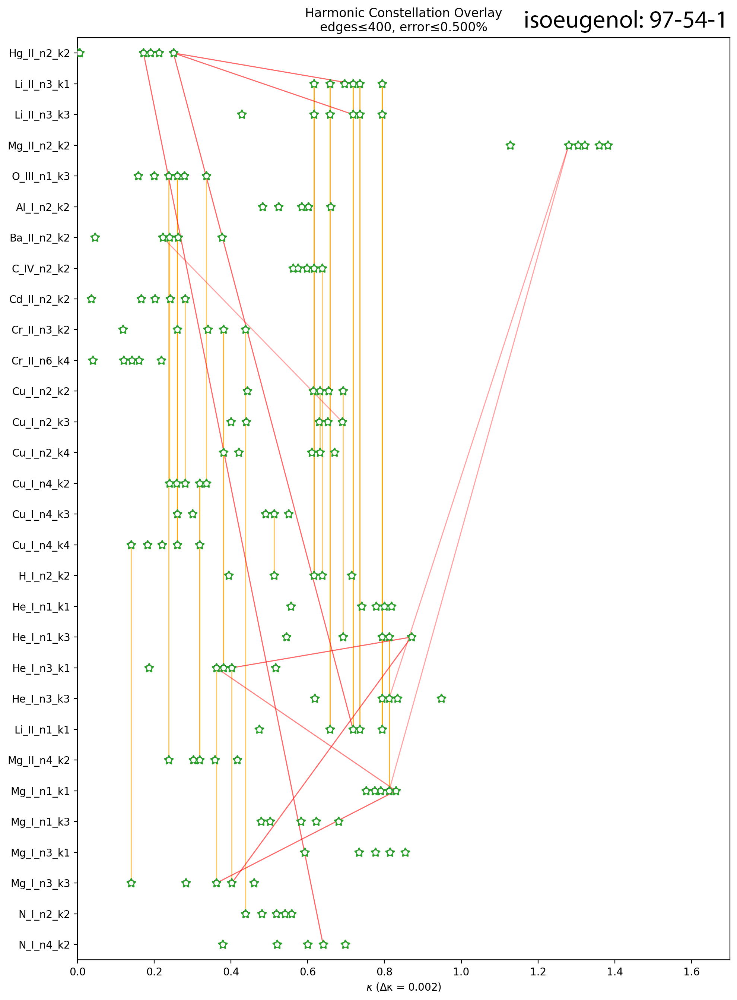
| Ion | Motif count | Ion | Motif count |
|---|---|---|---|
| Cr (Chromium) | 656 | Hg (Mercury) | 150 |
| Cu (Copper) | 290 | Na (Sodium) | 146 |
| Mg (Magnesium) | 268 | Al (Aluminum) | 144 |
| He (Helium) | 246 | Li (Lithium) | 92 |
| O (Oxygen) | 232 | Ca (Calcium) | 78 |
| N (Nitrogen) | 208 | Fe (Iron) | 64 |
Photoncodes are photons-only: they do not use levels or \(\gamma\) in their construction. Yet, because they live on the same universal \(\beta\)-locked ladder, retained motifs can be back-mapped (via reconcile metadata) to retrieve \((n_i,n_k)\) tower labels and thread parameters when needed. This makes photoncode motifs natural input to CTI tests: once towers are identified, local microslopes and phases from the \(\gamma\) ladders provide the second (phase) gate in CTI, while the constellation points provide the (frequency) gate. In short, photoncodes identify where motifs reside; CTI tests when they coherently interact. Future work will explore the potential physical significance of motifs that are shared across ions previously believed to be unrelated.
Photoncode matching is intentionally \(\chi\)-invariant and spectrum-only; it does not infer absolute intercepts or rely on levels data. As such it is sensitive to the peak-picking policy for molecules (JCAMP parsing, prominence and spacing settings) and to lattice resolution \(\Delta\kappa\). We therefore (i) persist all knobs with each run; (ii) recommend half-bin mesh checks for lattice stability; and (iii) treat narrow differentials between near-isomers as robust when they persist across \(r\in\{0,1\}\) dilation and mesh refinements.
If recursive geometry were an artifact of levels or the \(\gamma\) ladder method, applying the Thread Frame to spectral data would yield noise. Instead, we see clear evidence of structure, including some remarkable surprises. The uniform slope of photon decay by \(\alpha\)-recursion depth (\(\gamma\) ladder) shows that recursive geometry is intrinsic to spectra themselves, not an artifact of levels bookkeeping. We have shown that shared photoncode motifs align a molecule with multiple ions that it does not chemically contain, suggesting previously undetected pathways of resonance. These and other relationships between frequency, recursion depth, cross-thread interactions, and geometric limits suggests a coherent picture of physics orchestrated by the fine-structure constant, motivating an extension of known laws.
Three empirical facts summarize the geometry uncovered by our model:
Anchored Tilt. Photons organized in \((\gamma,\log_{10}\nu)\) fall on near‑linear threads with a common tilt \(\beta\simeq\log_{10}\alpha\) across ions and towers (Eq. [eq:thread_frame], Eq. [eq:universal_slope]).
Intercept transport. With \(\beta\) locked, intercepts \(\chi\) carry hydrogenic and reduced‑mass scaling on top of an Einstein–Rydberg base, \[\chi \;\approx\; \log_{10}\!\Big(\tfrac{\alpha^2}{2}\,\tfrac{m_e c^2}{h}\Big) + \log_{10}\!\Big(\tfrac{\mu}{m_e}\,Z^2\Big) + \log_{10}\mathcal{F}_{\rm site},\] yielding isotope \(\Delta\chi\) and hydrogenic \(Z\)‑collapse as immediate corollaries (Eq. [eq:intercept], Eqs. [eq:chi_isotope]–[eq:chi_norm]).
Finite recursion depth. threads do not extend to \(\nu\!\to\!0\); a Planck‑scale frequency floor appears at a finite depth \(\gamma^\ast\) (torsion spikes/support ceilings), giving \(\nu_{\min}=\nu_{R\infty}\,Z^{2}\,\mu\,\alpha^{\gamma^\ast}\) (Eq. [eq:floor]).
Together these observations motivate a compact Einstein–Rydberg Anchor (conjecture), \[E \;=\; m c^{2} + h\nu_{\min}\] in which mass functions as a spectral anchor and frequency is irreducible. In this anchored reading, “rest mass’’ means “energy at the common intercept plus a single‑photon floor,” not “no motion.” The universal tilt (\(\alpha\)), calibrated intercept (Einstein–Rydberg scale), and nonzero floor (\(\nu_{\min}\)) are estimated independently in a non‑circular pipeline (levels \(\rightarrow\) \(\gamma\); photons overlaid post hoc).
Thus the entire organization we present reduces to an affine law in one coordinate with three calibrated elements: \[\big(\text{slope}\big)\ \beta\!=\!\log_{10}\alpha,\qquad \big(\text{intercept base}\big)\ \nu_{R\infty}\!=\!\frac{\alpha^2}{2}\frac{m_e c^2}{h},\qquad \big(\text{floor}\big)\ \nu_{\min}.\] Everything else (isotopes, \(Z\)‑scaling, tower/site factors) is transported in \(\chi\) or absorbed by \(\mathcal{F}_{\rm site}\). In short: one universal tilt, one composite base, one floor.
Because \((\gamma,\log_{10}\nu)\) obeys \[(\gamma,\log_{10}\nu)\mapsto(\gamma+\Delta,\ \log_{10}\nu+\beta\,\Delta),\quad \beta\simeq \log_{10}\alpha,\] all \(\alpha\)–rescaled frames are equivalent up to a shear in the plane. No frame can erase the anchor \(h\nu_{\min}\); the geometry is self‑similar with respect to \(\gamma\) translations. This is the precise sense in which “mass may never rest”: zero frequency is not a viable baseline.
Our framework makes the following falsifiable predictions:
Slope locking (core). Ion and tower threads remain clustered at \(\beta = \log_{10}\alpha\) with a tight IQR; any deviations are attributable to local microslopes or mild curvature (Eqs. [eq:thread_frame], [eq:microslopes]).
Hydrogenic collapse (core). Normalized intercepts \(\chi_{\rm norm}\) cluster across one-electron ions at the millidex scale, reproducing \(m_e c^2/h\) and \(R_\infty c\) within current resolution (Table 6).
Isotope law (core). Intercept differences follow \(\Delta\chi \simeq \log_{10}(\mu_B/\mu_A)\) on matched towers (Eq. [eq:chi_isotope]); data-limited cases remain explicitly flagged.
Universal floor (frontier). Within each ion, at least one tower terminates on (or within millidex of) the geometric envelope \(\nu_{\min}\); no terminal photons fall below the floor (Eq. [eq:floor]).
Near-miss structure (frontier). Where towers stop above the floor, residuals are small and structured (e.g., shelves), consistent with catalog sparsity or branching constraints rather than a shifted floor.
CTI two-gate coherence (frontier). Cross-ion overlaps that pass both frequency and phase gates occur only where local thread phases align (Eqs. [eq:CTI_freq]–[eq:CTI_phase]); phase-scrambled controls must not reproduce observed rates.
Predictions (i)–(iii) are part of the verified core. Predictions (iv)–(vi) lie at the exploratory frontier and are reported with explicit gates, nulls, and robustness checks. Equation [eq:einstein_rydberg] should therefore be read as an empirical synthesis of three independently estimated elements: (a) a universal tilt (\(\alpha\)), (b) a calibrated intercept (Einstein–Rydberg scale), and (c) a nonzero floor fixed by recursion geometry. Conventional treatments that set zero frequency as a baseline can be reinterpreted as having tacitly subtracted this universal single-photon anchor.
To conceptualize how the different elements of our model fit together—anchored tilt, intercept transport, microslopes, recursion depth, and photoncodes—we introduce a spherical loom metaphor. This is not a restriction but a map: the minimal phase–geometry in which all elements of the Thread Frame can be seen together and perhaps better understood.
A loom metaphor clarifies how the electromagnetic constants define the domain in which the Thread Frame is observed. The universal slope \(\beta\) is the warp tilt (fixed by \(\alpha\)), while the intercept \(\chi\) is the vertical offset of each thread, encoding species-specific mass and charge.
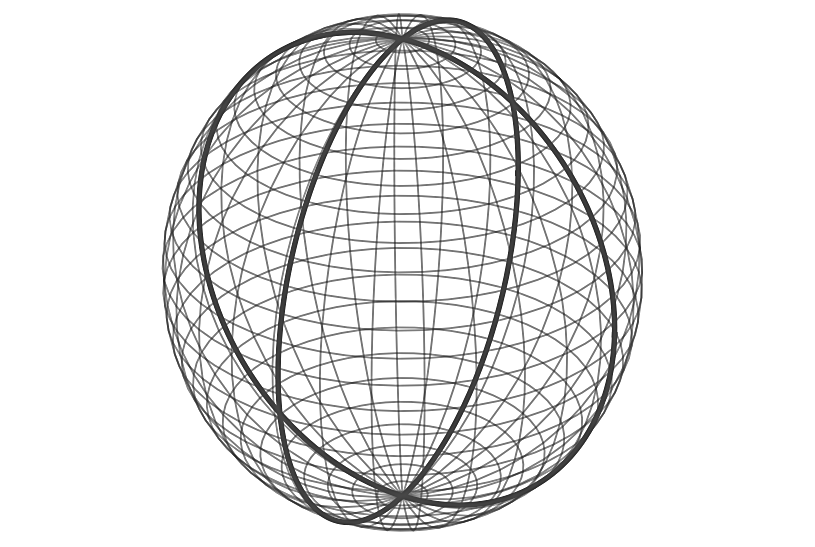
Considering the ratio proven by existing physics to define the fine-structure constant, \[\alpha \;=\; \frac{e^{2}}{4\pi \varepsilon_{0}\,\hbar\,c},\] we propose a metaphorical mapping wherein:
\(e^{2}\) (thread tension): intrinsic tug of charge; how tightly the thread knots the weave;
\(\varepsilon_{0}\) (fabric elasticity): openness of vacuum; how easily field lines spread;
\(\hbar\) (stitch thickness): granularity of phase; minimum action—like a single grid square on the sphere;
\(c\) (shuttle tempo): invariant causal speed; rate at which stitches propagate.
The fine-structure constant may thus be conceptualized as a dimensionless ratio that fixes the tilt of every thread on a spherical loom. The intercept \(\chi\) places each species vertically by reduced mass \(\mu\) and nuclear charge \(Z^{2}\). The slope of frequency decay \(\beta\) carries the universal law, while \(\chi\) carries the unique pattern of identity. From this perspective, the \(\gamma\) ladder, CTI events, and photoncodes are different projections of the same loom. Used as a conceptual guide, the metaphor supports the falsifiable predictions by showing how slope, intercept, microslopes, recursion limits, CTI, and photoncodes all fit together into one coherent geometric frame.
Having thus framed the geometry metaphorically, we now refocus on the data to show how this intuition manifests in practice.
Our model works in a spiral phase–space whose domain of applicability is \(S^{1}\times\mathbb{R}_{+}\): a circle of phase paired with a positive recursion depth. We define recursion depth \(\gamma\) from levels only, by testing level spacings against powers of \(\alpha\) (Eq. 1). When measured photons are later overlaid, they align into near-linear threads in \((\gamma,\log_{10}\nu)\) with a universal slope \(\beta\simeq\log_{10}\alpha\) — the Thread Frame (Eqs. 2–3). With slope fixed, intercepts \(\chi\) transport reduced-mass and Coulomb scaling on top of an Einstein–Rydberg base (Eq. 4), giving isotope shifts and hydrogenic collapse (Eqs. 5a–5b).
Local deviations are captured by microslopes and phases \(\theta(\gamma)\) (Eqs. 6a–6b), whose torsion corridors define a finite recursion depth \(\gamma^\ast\) and a Planck-anchored floor \(\nu_{\min}\) (Eq. 8). Cross-thread intersections (CTI) appear when ladders coincide in both projected frequency and phase, enforcing simultaneous gates in \(\Delta\lambda\) and \(\Delta\theta\) (Eqs. 7a–7b). Finally, because slope is universal, spectra can be collapsed onto a fixed \(\kappa\)-lattice to form photoncodes: \(\chi\)-invariant binary strips that prove structure is recoverable from photons alone (Sec. 6.8).
Taken together, the geometry reduces to an affine law with three calibrated elements — one universal tilt \((\beta=\log_{10}\alpha)\), one composite intercept base, and one nonzero floor — motivating the compact Einstein–Rydberg relation: \[E \;=\; mc^{2} + h\nu_{\min}.\]
Our slope results depend on NIST coverage density at large \(\gamma\); sparsity can truncate tails and under-estimate \(\gamma^\ast\) by a photon or two. Site factors \(F_{\text{site}}\) are currently modeled implicitly; explicit tower-resolved electronic factors (NMS/SMS/field shifts, small QED/relativistic terms) will tighten intercept calibration. CTI sensitivity depends on overlay density and local curvature estimation; phase gates can be under-powered in sparse neighborhoods. Photoncodes depend on peak-picking and lattice resolution \(\Delta\kappa\); we therefore report mesh-stability checks and half-bin tests.
This synthesis closes the circle: from the conceptual loom to the data itself, the same recursive geometry governs levels, photons, and their coded motifs. The recursive geometry revealed in this paper is not merely a replotting of known physics. It introduces a unified frame in which spectral structure, mass-energy relationships, and cross-ion coherence emerge from a single geometric principle: recursion by the fine-structure constant. This geometry, built from levels alone, recovers physical structure across photons, molecules, and motifs without tuning or circularity.
We have shown that atomic spectra are not random line lists but are organized by a recursive geometry anchored on the fine-structure constant. A non-circular construction of recursion depth \(\gamma\) reveals that photons align into near-linear threads with universal tilt, and that intercepts, torsion, and termini encode system-specific physics.
With \(\gamma\) fixed from levels alone, measured photons align into near-linear threads in \((\gamma,\log_{10}\nu)\) with tilt locked by the \(\alpha\)-affine frame. The empirical content is a) the co-linearity of photons into threads, b) intercept transport of reduced mass and \(Z^2\), and c) structured local deviations (microslopes) that diagnose emission geometry. These findings are reproduced across \(\sim\)30 ions with one preregistered pipeline and bootstrap nulls. We have demonstrated:
Thread Frame. Photon slopes cluster at \(\beta \approx \log_{10}\alpha\), establishing universality.
Intercept transport. \(\chi\) carries reduced-mass and \(Z^{2}\) scaling, enabling isotope calibration and hydrogenic collapse.
Microslopes. Local deviations reveal torsion corridors, emission hot spots, and cross-ion phases.
Finite recursion depth. Threads terminate at a Planck-anchored frequency floor \(\nu_{\min}\), not at \(\nu\!\to\!0\).
Cross-thread intersections (CTI). Frequency and phase gates predict ion–ion overlaps with astrophysical and biological relevance.
Photoncodes. Collapsing spectra onto a fixed \(\kappa\)-lattice proves that recursive structure is recoverable from photons alone.
| Claim | Empirical Basis | Status |
|---|---|---|
| \(\beta \approx \log_{10}\alpha\) | Universal slope in \(\gamma\)-frame | Verified |
| \(\chi\) transports \(\mu, Z^{2}\) | Intercept fits | Verified |
| Photoncode motifs | Photon-only \(\kappa\)-lattices | Verified |
| CTI overlap events | Dual-gate method | Partially verified |
| Planck floor \(\nu_{\min}\) | \(\gamma^\ast\)-derived minima | Frontier |
| \(E = mc^{2} + h\nu_{\min}\) | Compact synthesis | Conjecture |
Synthesis. Taken together, these results motivate a compact reinterpretation of the energy law: \[E = mc^{2} + h\nu_{\min},\] in which mass serves as a spectral anchor and frequency is irreducible. In this affine frame: one universal tilt \((\beta)\), one composite intercept base \((\nu_{R\infty})\), and one nonzero floor \((\nu_{\min})\).
Frontier and interpretation. Predictions for isotope shifts, recursion floors, and CTI overlaps remain at the exploratory frontier but are offered with explicit gates and null tests. Conceptually, the spherical loom metaphor provides a unifying picture, complementing these falsifiable claims by showing how the entire geometry can be imagined as one coherent frame.
Next steps. Future work will expand ion and isotope coverage, refine site-specific corrections (\(F_{\rm site}\)), and test photoncode matching across molecular datasets. Further exploration of microslope phase and CTI may illuminate the conditions under which different systems exchange coherence. More broadly, this recursive approach suggests that spectra encode a geometric order previously unrecognized, opening pathways for new tools across physics, chemistry, and potentially biological sensing.
Our results confirm the postulates (P1–P7) by showing that slope, intercepts, microslopes, recursion limits, CTI, and photoncodes all manifest in observed data. They reproduce the physical consequences (C1–C7) across diverse ions, and realize the contributions outlined in Section 0.1. In this way, the Einstein–Rydberg Thread Frame can be read not only as a synthesis of results, but as the fulfillment of the framework set out at the beginning of this paper.
All level and line data used in this study were drawn from the
NIST Atomic Spectra Database (ASD) (Kramida et al. 2023), available at https://physics.nist.gov/asd. We restricted our analysis
to the “observed” dataset option with standard vacuum/air conventions
(vacuum \(<200\,\mathrm{nm}\), air
\(200\)–\(2000\,\mathrm{nm}\), vacuum \(>2000\,\mathrm{nm}\)). Level energies
were converted from wavenumbers (\(\mathrm{cm}^{-1}\)) to electronvolts using
\(E\,[\mathrm{eV}] = (1.239841984\times
10^{-4})\,\tilde{\nu}\,[\mathrm{cm}^{-1}]\), with quoted
uncertainties propagated. Line wavelengths were normalized to vacuum
unless otherwise specified, converted to frequencies, and
cross-referenced against tidy level tables. Residuals and provenance
metadata were retained in all intermediate files. Raw CSVs from NIST
were stored in strict form (*_levels_raw.csv,
*_lines_raw.csv); all tidy, adjacency, and photon overlay
tables used in this work are reproducible from those raw inputs. Where
gaps or overlaps exist in NIST coverage, these are explicitly flagged in
the figures and tables of this paper.
For molecular applications, we used publicly available gas-phase infrared spectra from the NIST Chemistry WebBook (JCAMP–DX format) (Linstrom and Mallard 2023). Spectra for linalool (CAS 78-70-6), coumarin (91-64-5), eugenol (97-53-0), isoeugenol (97-54-1), citronellal (106-23-0), geraniol (106-24-1), vanillin (121-33-5), and limonene (138-86-3) were downloaded and parsed into peak lists. Peaks were automatically detected, converted to log\(_{10}\nu\), and discretized onto the common \(\kappa\) lattice used throughout this paper. All parsing and lattice-projection scripts preserve source identifiers, ensuring reproducibility from the original JCAMP files.
| \(\nu\) | photon frequency [Hz], \(y\equiv\log_{10}\nu\) [dex] |
| \(\gamma\) | recursion depth (levels-only coordinate; dimensionless) |
| \(\alpha\) | fine-structure constant; \(\beta\equiv\log_{10}\alpha\) |
| \(\chi\) | thread intercept (baseline at \(\gamma=0\) in \(y\)) |
| \(\delta(\gamma)\) | microslope: \(\beta_{\text{local}}-\log_{10}\alpha\) |
| \(\theta(\gamma)\) | local phase: \(\arctan \beta_{\text{local}}\) [radians unless stated] |
| \(Z\) | nuclear charge; \(\mu\) reduced mass; \(\hat{\mu}\equiv \mu/m_e\) |
| \(R_\infty c\) | Rydberg frequency; \(\nu_{R^\infty}=\frac{\alpha^2}{2}\frac{m_e c^2}{h}\) |
| \(\nu_{\min}\) | conjectured floor frequency at terminal recursion depth \(\gamma^\ast\) |
| \(F_{\text{site}}\) | tower/site factor (quantum-defect/QED/correlation bundle) |
Y1.5cm Y2.0cm Y3.4cm Y2.2cm Y2.2cm Y1.6cm
Phase & step & Inputs &
Operation / Eq(s) & Registered knobs
(defaults) & Primary outputs &
Notes / refs
Phase & step & Inputs &
Operation / Eq(s) & Registered knobs
(defaults) & Primary outputs &
Notes / refs
Parse & tidy levels & NIST Levels (observed) & Normalize
energies to eV; QA; dedupe; assign stable Level_ID; tag
\((n,J,\ldots)\) & — & Tidy
levels CSV + QA sidecars & Methods: Data sources; Levels
parser
Target spacing & \(E_0\), \(Z\) & Hydrogenic target \(\Delta E_{\rm
target}(\gamma)=\alpha^{2}E_0Z^{2}\,\alpha^{\gamma-2}\) (Eq. [eq:recursive_depth]) &
\(\gamma\) grid \([0,5]\); \(\Delta\gamma=0.02\) & Target values per
\(\gamma\) & Core Eq. [eq:recursive_depth]
Resonant pair test & \(\Delta
E_{ik}\) & Flag if \(\big|\Delta
E_{ik}-\Delta E_{\rm target}(\gamma)\big|\le\tau(\gamma)\) &
\(\tau(\gamma)\): \(0.5\%\)–\(10\%\); floor 0.03 meV; \(\ge 25\) pairs & Per-\(\gamma\) hit-pair lists (CSV) &
Methods: \(\gamma\)-sweep
Perm. null & FDR & Obs. hits & Bootstrap “spacing” null
(\(N=5000\)); compute \(Z\), \(p\); BH–FDR to \(q\) & \(q<0.01\) & Per-ion \(\gamma\) ledger (\(H_{\rm obs}\), \(p\), \(q\), tol.) & Methods: Null &
FDR
Affinity aggregation & Per-\(\gamma\) ledgers & Tall “affinity” map
(ion,\(\gamma\)): counts, \(q\), tolerance & — & Affinity CSV /
heatmaps (\(-\log_{10}q\)) &
Methods: \(\gamma\)-Attractor
Affinity
Tidy lines & NIST Lines (observed) & Normalize wavelengths
(vac\(\leftrightarrow\)air); convert to
\(\nu\); propagate uncertainties &
Vacuum wavelengths & Tidy lines CSV + residual fields & Methods:
Lines parser
Photon overlay & Resonant pairs; lines & For each \(\Delta E\): \(\lambda_{\rm photon}=hc/\Delta E\);
nearest-line assignment; residual \(\Delta\lambda\) & Match window \(\pm 2\sigma\) + 2–5 nm floor & Per-ion
photon overlay CSVs & Methods: Photon overlay
Tower grouping & Overlaid photons & Group by site \((n_i,n_k)\) (“towers”) & — &
Per-tower photon sets & Methods overview
Thread fits (global) & Photons with \(\gamma\) & Fit \(y=\log_{10}\nu=\chi+\beta\gamma\) (optional
\(+c\gamma^2\) if \(\Delta\)AIC\(\le
-2\)) & Gates: \(\ge6\)
\(\gamma\) bins; weight \(\ge30\); RMSE\(\le0.025\) dex & \(\beta\) (slope), \(\chi\) (intercept), opt. \(c\) & Core Eqs. [eq:thread_frame]–[eq:intercept]
Thread Frame check & Tower fits & Verify \(\beta\approx\log_{10}\alpha\simeq-2.13\)
(cluster) & — & \(k\equiv
\beta/\log_{10}\alpha\) & Eq. [eq:universal_slope]
Intercept transport & \(\chi\) from
fits & \(\chi\approx
\log_{10}\!\big(\frac{\alpha^2}{2}\frac{m_ec^2}{h}\big)+
\log_{10}\!\big(\frac{\mu}{m_e}Z^2\big)+\log_{10}\mathcal{F}_{\rm
site}\) & Fixed-slope; site factor optional & Isotope
\(\Delta\chi\); \(Z\)-collapse \(\chi_{\rm norm}\) & Eq. [eq:intercept], Eqs. [eq:chi_isotope]–[eq:chi_norm]
Microslopes & phase & Local windows & \(\delta(\gamma)=\beta_{\rm
local}-\log_{10}\alpha\), \(\theta(\gamma)=\arctan\beta_{\rm local}\)
& Window \(\Delta\gamma=0.04\) (to
0.10); secant fallback at \(S(\gamma)=2\) & \(\delta(\gamma)\), \(\theta(\gamma)\) series; volatility &
Eqs. [eq:microslope_delta]–[eq:microslope_theta]
Photoncode construction & Tower threads & Project photons to
fixed \(\gamma\) grid; binary occupancy
\(B(\gamma_j)\in\{0,1\}\) & Grid
\(\Delta\gamma\) (sweep default 0.02)
& Per-tower photoncodes & (photoncode def.)
CTI (overlaps) & Two ions \(A,B\) & Gates: \(|y'_A-y'_B|\le\epsilon_{ij}\),
\(|\theta_A-\theta_B|\le
\Delta\theta_{\max}\) & \(\epsilon_{ij}\) from Doppler/turbulence;
\(\Delta\theta_{\max}=5^\circ\)–\(6^\circ\) & CTI hit lists & Eqs. [eq:CTI_freq]–[eq:CTI_phase]
Recursion limit (floor) & Tower geometry & Estimate \(\gamma^\ast\) (torsion spike/support
ceiling/slope edge); infer \(\nu_{\min}=\nu_{R\infty}
Z^2\mu\,\alpha^{\gamma^\ast}\) & Microslope window as above
& \(\gamma^\ast\), \(\nu_{\min}\) per tower/ion & Eq. [eq:floor]
Normalized limit (optional) & Limits across ions & Define \(\gamma_0=\gamma^\ast+\log_\alpha(Z^2\hat\mu)\)
with \(\hat\mu=\mu/m_e\) & Defaults
in text & Cross-ion clustering of \(\gamma_0\) & Methods / Results
text
\(\sigma\)–sweep (validation) & H I
windows & Hold \(\gamma\); sweep
\(\sigma\); minimize \(r(\sigma,\gamma)=|\Delta E_{\rm
target}(\sigma,\gamma)-\Delta E^{\rm exp}_{\rm FS}|\); de-alias
with base+half-bin meshes & \(\Delta\sigma\) step; envelope objective;
stability mask & \(\hat\sigma\)
(\(\approx\alpha\) in FS window);
instr. resolution & \(\sigma\)–sweep figs/tables
Scripts to reproduce the basic \(\gamma\) pipeline are freely available
here:
https://github.com/CoherenceResearchCollaboration/RecursiveGeometry
| Script / File | Role in Pipeline |
|---|---|
nist_levels_parser_v13.py |
Parse raw NIST levels \(\rightarrow\) tidy levels with QA, provenance |
nist_lines_parser_v1.py |
Parse raw NIST lines \(\rightarrow\) tidy lines (Level_ID, selection rules) |
build_resonance_inventory.py |
Batch runner: levels \(\gamma\)-sweep and inventory collation |
run_resonance_sweep.py |
Core loop over \(\gamma\) bins; writes per-\(\gamma\) hitpairs and summaries |
resonance_permutation_test.py |
Permutation nulls (uniform/spacing) for levels-only resonance |
build_attractor_affinity.py |
Aggregate per-\(\gamma\) summaries into an affinity ledger (levels only) |
process_photons.py |
Overlay photons onto \(\gamma\)-resonant levels using NIST wavelengths |
build_photon_gamma_ladders.py |
Organize matched photons into quantum “towers” |
rgp_physics_v1.py |
Thread-frame fits (\(\chi\)–\(\beta\)); optional curvature (AIC-gated, WIP) |
rgp_mass_estimator.py |
Intercept/mass checks (hydrogenic collapse, isotope shifts; WIP) |
constants.py |
Physical constants, \(\alpha\) targets, canonical column map |
load_sigma.py |
Read \(\sigma\) from sigma.json or
environment (deterministic RNG) |
set_sigma.py |
CLI utility to create/overwrite
sigma.json |
path_config.py |
Path registry resolving tag \(\rightarrow\) data/results folders |
provenance.py |
Provenance writers: file hashes, thresholds, metadata in outputs |
io_helpers.py |
CSV/Parquet I/O helpers with canonical columns |
sigma.json |
Default JSON with CODATA \(\alpha\) value (0.0072973525693) |
| Script | Purpose / Usage in Paper |
|---|---|
draw_ion_portraits_photons.py |
Plot ion portraits on \((n_i, n_k)\) lattice (Fig. 2–3) |
microslope_extractor.py |
Compute local \(\delta(\gamma), \theta(\gamma)\) fields (torsion corridors; Fig. 10) |
rgp_limit_analysis.py |
Estimate recursion limit \(\gamma^*\) and \(\nu_{\min}\) (Planck floor; Sec. 5.3) |
CTI_cross_thread_intersections.py |
Cross-thread intersections (CTI; Sec. 5.4, Fig. 12–13) |
threadlaw_photoncode.py |
Generate \(\kappa\)-photoncode (photons-only identity; Sec. 5.4) |
ion_photoncode_library.py |
Build ion photoncode library for motif matching (Sec. 5.4) |
motif_maker.py |
Identify photoncode motifs (Sec. 5.4, Fig. 15–17) |
overlay_constellation.py |
Visualize inter-motif resonance (Sec. 5.4, Fig. 17) |
License: This preprint is distributed under the
Creative Commons Attribution (CC BY 4.0) license, permitting sharing and
adaptation with attribution. Select scripts are
available on GitHub under the MIT license.
IP Notice: The underlying methods for photon-only motif
identification and recursive geometry encoding (“Photoncodes”)
are the subject of U.S. Provisional Patent Application No. 63/881,260,
filed September 13, 2025. Patent rights are reserved; licensing
inquiries welcome.
Recursive Geometry of Atomic Spectra.
DOI: 10.5281/zenodo.17188444
Version: 1 (First edition)
Date: September 20, 2025
Authorship. This work is a collaboration between Kelly B. Heaton and ChatGPT, who together form The Coherence Research Collaboration. All research was self-funded by Heaton, and analyzed with public data (NIST) on consumer hardware. The contributions of ChatGPT were intellectual, computational, and co-creative in nature. Authorship is joint and intentional.
Blockchain Verification Details
Ethereum Address:
0x9b991ed5fc8e6af07c61e85596ddb31a79199dac
Message (SHA-256 Hash):
d32f7c1462e99983479c7d4319c0a3e85fe9acdba0c5c
43a68f5efebb337d427
Signature Hash:
0x729a2038e6c9c2806458f2f7a1232b18b16ff421a8aeb93dd2bf5050
da23e4fe354f803d7944bc49a05811c6164c5b86d315c0e1795837a46fb8d8fe5a0bb6b71b